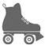
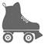
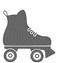
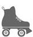

UNE
ÉTOILE
EST
NÉE
Les années suivantes, Billy et Fritzi donnèrent des représentations chaque week-end dans tout le Midwest, avec quelques incursions aussi au Canada. Grâce à Billy, Fritzi rencontra plusieurs voltigeurs de légende. Elle vola même avec le plus connu de tous, Clyde Pangborn, dit « Tête en bas », qui lui apprit à améliorer ses vrilles, ses loopings, et lui montra comment sortir d’un décrochage.
Bien sûr, c’était un métier dangereux, et la vie avec le cirque, comme elle s’en rendrait compte très vite, était éprouvante. Tous les acrobates buvaient beaucoup, mais on s’y amusait, les temps morts n’existaient pas, et comme Fritzi se plaisait à dire : « C’est quand même plus exaltant que mon travail à la conserverie. »
Le lundi matin, après le spectacle du week-end, Billy avait en général bien trop la gueule de bois pour reprendre le manche. Alors Fritzi partait seule lâcher des tracts au-dessus de la prochaine ville où ils devaient se produire. Ce qui ne la gênait pas. Il y avait quelque chose d’enivrant à naviguer seule, les cheveux au vent dans son avion. Parfois elle ne rentrait pas avant la tombée de la nuit, et alors les étoiles l’accompagnaient. Elle se trouvait si bien dans les airs qu’elle aurait pu ne jamais redescendre. Fritzi adorait traverser les nuages d’argent et découvrir soudain les lumières des villes au sol. Bien sûr, sa famille lui manquait terriblement mais, cela mis à part, c’était tout de même la belle vie. D’autant plus qu’elle se hissa rapidement en haut de l’affiche.
Venez voir
LE CIRQUE VOLANT DE BILLY BEVINS
avec en vedette
FRITZI
la célèbre aviatrice et cascadeuse
et ses vertigineuses acrobaties !
Boucles, tonneaux et vrilles avec Fritzi et Billy !
AHURISSANT !
FRISSONS ASSURÉS !
Rendez-vous samedi à Legion Field, 14 h
Un divertissement pour toute la famille
Promenades en avion : 5 dollars les 10 minutes
Et ces cascades étaient spectaculaires. Vêtue de sa combinaison de pilote en cuir violet, de sa longue écharpe blanche, de ses cuissardes, et le casque sur la tête, Fritzi se glissait sur une aile, puis se relevait et se mettait à danser. Quelques instants plus tard, l’avion étant stabilisé, Billy, muni d’un parachute, sortait à son tour du cockpit, marchait au bout de l’autre aile et sautait. À terre, les spectateurs hurlaient de terreur. « Il l’a laissée toute seule ! Elle va se tuer ! » Entre-temps, Fritzi, revenue dans le cockpit, prenait les commandes de l’appareil et, à la grande surprise de la foule, enchaînait boucles et tonneaux. Elle descendait en feuille morte, presque jusqu’au sol, pour se redresser in extremis. Et elle recommençait ! La foule retenait son souffle, craignant qu’elle s’écrase à tout moment, tandis que Billy atterrissait tranquillement avec son parachute.
Le passage de relais, dans les airs, était une opération dangereuse, mais Billy, ne laissant rien au hasard, avait tout chronométré à la seconde près.
Lorsqu’elle se posait enfin, Fritzi se retrouvait assiégée par ses admirateurs, ce qui la réjouissait, elle comme lui. Elle restait au milieu du champ à signer des autographes, posait devant les appareils photo, puis elle emmenait les amateurs faire une promenade dans les airs. Pendant ce temps, Billy se désaltérait à la buvette en comptant la recette. Certains week-ends, Fritzi ramassait jusqu’à soixante-quinze dollars.
Elle se réjouissait de pouvoir envoyer un peu d’argent à la maison. Sa mère s’inquiétait toujours pour elle, nuit et jour.
« Elle est heureuse, Linka, observait Poppa.
– Heureuse de faire l’intéressante oui, disait Momma en soupirant. Au moins, ça lui rapporte de quoi vivre. »

POINT
CLEAR, ALABAMA
Sookie cherchait un moyen d’annoncer la nouvelle aux enfants, ce qui lui donnait bien du mal. Il fallait une astuce pour amortir le choc. Elle ouvrit le livre de recettes qu’elle venait d’acheter : La Cuisine polonaise. Une idée serait de les inviter tous à dîner, de ne leur servir que des plats traditionnels du pays et, si ça leur plaisait, leur annoncer quelque chose du genre : « Eh bien, tant mieux, parce que vous êtes tous d’origine polonaise. » Elle parcourut les pages, et pensa qu’il y avait beaucoup trop de betteraves et de choucroute là-dedans.
Elle connaissait bien ses enfants, qui, assurément, n’aimeraient pas le golonka, du jambonneau aux légumes, ni le zrazi, bœuf en tranches avec de la poitrine fumée. D’ailleurs, Sookie ne savait pas ce qu’était la poitrine fumée. Elle poursuivit ses recherches, pensant qu’elle trouverait finalement quelque chose d’amusant. Elle renonça en lisant la recette de la czernina, une soupe au sang de canard. Mon Dieu. Ça n’irait pas du tout. Mieux valait réfléchir à un autre moyen. Si elle ne les invitait pas en même temps, il faudrait sans doute commencer par Dee-Dee. Cela promettait d’être difficile.
Car Lenore avait fourré toutes sortes d’absurdités dans la tête de sa petite-fille, prétendant, par exemple, que les Simmons comptaient parmi les familles les plus importantes de Virginie. Du coup, Dee-Dee avait tendance à jouer les snobs. Sookie l’avait entendue, à l’âge de treize ans, déclarer à une jeune voisine, récemment installée en ville : « Ma grand-mère est d’origine anglaise, c’est une Simmons de la sixième génération. Et vous, vous venez d’où ? » Sookie avait aussitôt exigé que Dee-Dee s’excuse auprès de la fillette. Elle avait également demandé à sa mère de ne plus lui faire croire qu’elle était meilleure que les autres. Comme d’habitude, Lenore n’avait rien voulu savoir. « Pourquoi lui mentirais-je, Sookie ? avait-elle répondu. Le pedigree, ça compte chez les animaux, et chez les êtres humains aussi. »
Sookie reprit progressivement un peu d’assurance. Par bonheur, depuis l’épisode du cimetière, où c’était moins une, elle avait réussi à éviter sa mère. Puis, un matin, alors qu’elle se rendait en ville pour récupérer du linge à la blanchisserie, elle tomba sur elle.
Elle lui dit bonjour aussi gentiment que possible, et Lenore la regarda bizarrement, sans même lui demander si elle allait mieux. Elle ne trouva qu’une chose à dire :
– Seigneur, tu as une peau épouvantable ! À quand remonte ton dernier peeling ?
Sookie se retint de ne pas l’étrangler sur-le-champ, devant la quincaillerie. En s’éloignant, le cœur battant et les mains moites, elle se rendit compte qu’elle était toujours très perturbée.
Rentrée chez elle, elle téléphona à Dena.
– Sookie ! Je suis contente que tu m’appelles. Comment vas-tu, ma chérie ?
– Très mal.
– Des problèmes ?
– Si l’on considère qu’avoir envie d’assassiner quelqu’un en plein jour, à cent mètres du commissariat, est un problème, alors oui, j’en ai un.
– Ça ne te ressemble pas, en effet.
– Non. Je suis peut-être en pleine dépression nerveuse sans le savoir.
– Tu te fais du souci ?
– Oui. Vu que j’ignore tout de mon patrimoine génétique, qui sait de quoi je suis capable ? J’ai peut-être des parents en prison, à l’heure qu’il est. Et si j’étais un danger pour les autres, pour moi-même ?
– Tu exagères, là. Ce n’est pas possible.
– Tu crois ?
– Bien sûr que non. Je suis certaine que tes vrais parents sont des gens très bien, très gentils. Tu ne serais pas ce que tu es, dans le cas contraire.
Une fois raccroché, Sookie espéra que Dena disait vrai. Après quelques recherches sur le sujet, elle avait appris que nos parents à tous ont vingt-trois paires de chromosomes. Peut-être ne saurait-elle jamais rien de son « père inconnu », et pour cause, mais pour le bien de ses enfants, le sien propre, et pour de simples raisons de santé, il serait sans doute bon de mener une petite enquête au sujet de sa mère biologique. Si, par le plus grand des hasards, Sookie avait des tendances meurtrières, autant le savoir le plus tôt possible.
Sookie se donna quelques heures pour rassembler son courage, appeler les renseignements et demander le numéro de la chambre de commerce de Pulaski. Elle se munit d’un petit sac en papier au cas où elle ferait une crise d’hyperventilation. À la chambre de commerce, la femme qui lui répondit avait un accent haché, pas du tout familier.
– Marian à l’appareil. Que puis-je faire pour vous ?
– Euh… bonjour. Vous ne me connaissez pas, mais… j’aurais voulu avoir des informations sur une famille… qui porte le nom… de Jurdabralinski.
– Comment ?
Sookie épela :
– J-U-R-D-A-B-R-A-L-I-N-S-K-I.
– Ah, Jurdabralinski. Les pompistes.
– Pardon ?
– Oui, ils étaient propriétaires de la station-service, autrefois.
– Ah. Bon. Pourriez-vous me dire s’ils étaient en bonne santé ?
– En bonne santé ? !
– Oui. Ont-ils été traités pour le diabète, pour des problèmes cardiaques, psychiatriques éventuellement, le cancer ou l’alcoolisme ?
– Ouh là ! Vous m’en posez, une colle ! Ma mère était en classe avec deux des filles. Il y avait cinq enfants, si je me souviens bien, un garçon et quatre filles, dont deux jumelles.
– Des jumelles ? Dieu du ciel !
– Mais oui. L’une des deux autres voulait se faire bonne sœur. Enfin, pour autant que je sache, ils étaient tous en bonne santé.
– Ils sont toujours dans la région ?
– Hm, voyons… Une des jumelles, Tula, a épousé Norbert Tanawaski, mais ils habitent Madison, maintenant. Vous êtes une parente ?
– Non, non, étudiante. Je fais des recherches sur des familles polonaises émigrées de longue date.
– Ce n’est pas ce qui manque à Pulaski. Bien, je peux essayer de vous renseigner un peu plus, savoir où ils sont, etc., mais cela prendra quelques jours. On est submergés de travail, cette semaine. C’est le festival de la polka, il va y avoir le défilé et mille choses à faire.
– Je ne vous dérange pas plus longtemps, dans ce cas. Je rappellerai la semaine prochaine.
– Laissez-moi quand même votre nom.
– Mon nom ? répéta Sookie, soudain affolée. Oui, c’est Alice. Alice Finch.
– Entendu, Alice. À la semaine prochaine.
Sookie n’aimait pas mentir, et une étudiante ne s’exprimerait sans doute pas comme elle – mais il fallait protéger sa mère biologique et Lenore. D’un autre côté, qui ment une fois risque de recommencer cent autres. Au moins, elle avait obtenu quelques informations. Apparemment, les Jurdabralinski n’avaient pas de problèmes de santé. C’est tout ce que Sookie avait vraiment besoin de savoir. Tiens, ses mains tremblaient. Et si sa mère était celle qui avait fini bonne sœur ? Dans ce cas, cette femme ne tiendrait pas à ce qu’elle se montre. Si elle découvrait que sa fille était protestante, ça ne lui plairait pas beaucoup. Oui, Sookie en savait assez. Trop, même. Elle avait peur de rappeler la semaine prochaine. Que lui annoncerait-on, alors ?
Mon Dieu. Dena avait raison. Elle avait réellement besoin de consulter.
AU
SECOURS !
POINT
CLEAR, ALABAMA
– Allô, docteur Shapiro ?
– Oui ?
– Vous ne me connaissez pas, et j’ai une question. J’habite à dix minutes de votre cabinet. Est-ce que vous faites des visites ?
– Êtes-vous… immobilisée ? demanda-t-il, soucieux.
– Eh bien… plus ou moins. J’ai un problème qui, pour différentes raisons, doit rester secret.
– Je vois. Je vous assure, cependant, que ce qui se dit pendant une séance reste sous le sceau du secret. Voulez-vous prendre rendez-vous ?
– Oui, mais je ne peux pas. Vous aurez peut-être du mal à comprendre, mais j’ai un problème avec ma mère. Si quelqu’un devait me voir entrer ou sortir de votre cabinet, elle le saurait très vite. Ma mère connaît tout le monde.
– Ah. Vous habitez toujours chez vos parents ?
– Non. J’ai cinquante-neuf, enfin, soixante ans, je suis mariée et j’ai quatre grands enfants.
– Excusez-moi. Vous avez une voix jeune. Peut-être voudriez-vous m’éclairer un peu ?
– Cette conversation n’est pas enregistrée, au moins ?
– Du tout.
– Alors voilà, je viens de subir un choc terrible. J’ai découvert que je pourrais être la fille d’une religieuse polonaise du Wisconsin, au lieu d’être la personne que je croyais être. Mon amie Dena m’a suggéré de consulter un professionnel. Elle est mariée à un psychiatre. Il se trouve qu’aujourd’hui, j’ai eu sérieusement envie d’étrangler quelqu’un, alors elle a sans doute raison. Elle m’a déjà conseillé de vous appeler, et je ne l’ai pas fait. En fait, je crains d’être en pleine dépression. J’ai peut-être besoin de médicaments. Vous pourriez m’en prescrire par téléphone ?
– Non, j’ai d’abord besoin de vous voir.
– Ah… flûte.
– Mais je peux venir chez vous, si cela vous arrange ?
– Vraiment ?
– Bien sûr.
– Formidable. Quand ?
– Une seconde… J’ai une plage de libre à quatre heures, demain après-midi. Ça irait ?
– Très bien. Je vous donne mon adresse. C’est… euh, attendez, tout bien réfléchi, ce n’est pas une bonne idée. Ma mère habite juste à côté, elle est capable de passer sans prévenir, et elle ne frappe jamais. Je vous en demande beaucoup, docteur Shapiro, mais pourrait-on se rencontrer ailleurs ?
– D’accord. Si cela doit vous rassurer. Mais où ?
– Voyons… ah, je sais. À la Maison de la gaufre, sur la route 98.
– Bien. Dites-moi quand même votre nom.
Un bref silence.
– Je ne préfère pas… si cela ne vous gêne pas. Je ne tiens pas à ce qu’on sache que je consulte un psychiatre.
– Bon. Et comment vais-je vous reconnaître ?
– Ah oui. Eh bien… je porterai un chapeau. Et des tennis roses à pompons.
– Entendu.
– Combien ça me coûtera ?
– Voyons-nous d’abord, on avisera ensuite.
Le Dr Shapiro était un peu inquiet en raccrochant. Jamais il n’avait rencontré un patient à l’extérieur de son cabinet, et encore moins dans une Maison de la gaufre. Cela étant, cette pauvre femme au bout du fil faisait une grave crise de parano, ou alors elle était cinglée depuis toujours. Dans un cas comme dans l’autre, elle avait sérieusement besoin d’être aidée.

PULASKI, WISCONSIN
Mai 1941
Après avoir terminé le lycée, Wink travaillait à plein temps à la station-service avec son cousin Florian. Ses parents avaient besoin de lui. Plus lent, moins gaillard, Poppa n’était plus l’homme qu’il avait été. Le prix à payer, sans doute, d’avoir dormi tant d’années sur un lit de camp derrière le bureau, toujours prêt à remplir un réservoir au milieu de la nuit, et souvent par un froid glacial. Wink, qui avait son brevet de pilote, n’en disait rien, mais il était impatient d’aller faire ses preuves sur le front. Passant par le Canada, certains de ses amis s’étaient engagés dans la RAF, avaient gagné l’Angleterre et participaient déjà aux combats. Mais il avait promis à Angie, sa petite amie, de l’accompagner au bal des terminales et, à ce stade des choses, ce qu’Angie voulait, elle l’obtenait. De plus, il ne tenait pas à la laisser seule dans cette ville pleine d’immigrés balourds comme lui. Hésitant, incertain, il se décida à appeler Fritzi pour lui demander conseil.
– Hé, Wink chéri, lui dit-elle, tu sais que, moi, on ne me passera pas la corde au cou, mais si c’est ce que tu veux, Angie est une fille formidable. Je l’ai toujours bien aimée, alors en avant, toute, mon gars !
– D’accord ! Merci, Fritzi.
– Au fait, tu as de quoi lui acheter une bague de fiançailles ?
– Oh, je n’avais pas pensé à ça…
– Te bile pas. Je suis en fonds, ces temps-ci. J’ai gagné au poker, la semaine dernière à Des Moines. Je t’enverrai un peu d’argent dès qu’elle t’aura dit oui, ce dont je ne doute pas une seconde.
– Merci, frangine. Mais je me demande si je n’ai pas attendu trop longtemps. Les garçons lui courent après, en ce moment.
– Eh bien, raccroche, tête de pioche, et va la voir.
Vaines inquiétudes. Angie Broukowski était folle amoureuse de lui depuis la classe de 4 e. Wink était pour elle le plus beau, le plus charmant, le plus intelligent. Elle n’avait qu’un but dans la vie : devenir Mme Wencent Jurdabralinski. Donc, bien sûr, elle lui dit oui, et ils choisirent une date en juin pour se marier. Leurs deux familles étaient si nombreuses que deux cents personnes se pressèrent à la cérémonie, et ils invitèrent tant d’amis à la réception qu’il fallut louer la salle de M. Zielinski, à l’extérieur de la ville.
Fritzi arriva quelques jours avant le mariage pour participer aux préparations et tout le monde en ville fut enchanté de la retrouver. Depuis qu’elle avait intégré le Cirque volant de Billy Bevins, le journal avait publié quelques articles sur elle, et les habitants étaient très fiers de Fritzi, qui était un peu leur star de cinéma. Ses jeunes sœurs n’avaient jamais quitté Pulaski et portaient les robes que Momma leur confectionnait. Pour elles, avoir une sœur qui s’habillait à Chicago était à peine croyable.
Assises dans sa chambre, elles la regardaient, fascinées, enfiler des vêtements qui n’existaient pour elles que dans les magazines. Fritzi arborait même une chaînette en or à la cheville, le comble du chic. Mais elles n’étaient pas au bout de leurs surprises : quand Fritzi sortit d’un carton à chapeau une toque extravagante ourlée de dentelle blanche, toutes trois se mirent à hurler !
En descendant à la cuisine le lendemain matin, Wink demanda à sa mère :
– Où est Fritzi ?
– Comme si tu ne la connaissais pas ! Elle est déjà en ville en train de se pavaner avec son père, tiens !
Momma semblait le leur reprocher, mais en fait elle était ravie. Elle n’avait pas vu Poppa si heureux depuis longtemps.
Fritzi avait suggéré à Billy de l’accompagner au mariage, et il avait refusé, prétextant une vive allergie aux cravates et aux églises.
Néanmoins, le jour dit, il devait se sentir coupable ou avoir bu un coup de trop, sinon les deux, car lorsque les mariés sortirent sur le perron de l’église, il était en avion dans le ciel, où il dessina un grand cœur, avec au milieu l’inscription « Wink et Angie ». Fritzi éclata de rire en le voyant repartir vers Grand Rapids. L’appareil était censé être révisé, ce week-end-là, et Billy avait certainement graissé la patte au mécanicien pour faire un petit tour en douce.

LA MAISON
DE
LA
GAUFRE
Le Dr Shapiro était un jeune homme élégant qui portait des verres correcteurs. Arrivé avec quelques minutes d’avance, il se demandait maintenant si sa cliente ne lui faisait pas faux bond. Soudain, une femme chaussée de tennis roses à pompons s’approcha de la vitre et inspecta l’intérieur du snack-bar. Coiffée d’une casquette de pêcheur garnie de faux appâts, elle avait les yeux masqués par de grandes lunettes noires en plastique blanc, à la monture en forme de cœur. Elle gagna la porte, remarqua le jeune homme et vint s’asseoir à sa table.
– Docteur Shapiro ?
– Oui.
– C’est moi. Votre patiente.
Il eut envie d’ajouter : « Je ne m’en serais pas douté », mais son épouse prétendait que les gens du Sud n’appréciaient pas l’humour new-yorkais. Alors il dit simplement :
– Je vous en prie, asseyez-vous.
Sookie prit place et se colla au mur. Une serveuse en uniforme s’approcha de la table et lança gaiement :
– Bonjour, madame Poole, il y a longtemps qu’on ne vous avait pas vue.
« Eh bien, pour l’anonymat, c’est raté », pensa Sookie.
– Bonjour, Jewel, répondit-elle.
La serveuse regarda le Dr Shapiro, puis Sookie.
– Ce monsieur est votre fils, dont votre mère parle tout le temps ? C’est vrai qu’il est mignon.
– Non, c’est… un ami.
– Ah. Qu’est-ce que je vous sers ?
– Un déca, s’il vous plaît.
– Et monsieur ?
– La même chose.
– Tout d’abord, je vous remercie d’être venu, dit Sookie, tandis que la serveuse s’éloignait.
– Je vous en prie. Que puis-je faire pour vous ? Vous avez parlé d’un problème.
– En effet. Et c’est une longue histoire. Bien, commençons par le début. Il y a quelques semaines, je donnais à manger aux oiseaux. Ces sacrés geais bleus me sapent le moral. Je croyais avoir trouvé la solution en leur achetant des graines de tournesol, et des graines génériques pour les autres, plus petits…
Une demi-heure et trois décas plus tard, elle finit par parler de sa mère, et le Dr Shapiro comprit enfin pourquoi cette femme était sur les nerfs : il connaissait Lenore, et cela n’avait rien d’étonnant.
Lorsqu’il avait emménagé avec son épouse dans leur nouvelle maison, il s’était réveillé le lendemain matin à huit heures, en croyant entendre un groupe de hare krishna jouer des clochettes sur le perron. En ouvrant sa porte, il avait découvert une femme imposante, qui portait une pèlerine sur les épaules et un énorme panier dans ses bras, orné d’un grand ruban. D’une voix forte, elle s’était présentée : « Je m’appelle Lenore Simmons Krackenberry, présidente du Comité d’accueil des nouveaux arrivants à Point Clear. De la part du comité, permettez-moi de vous souhaiter… » Elle s’était mise à chanter sur l’air de Singing in the Rain : « … la bienvenue à Point Clear, la bienvenue à Point Clear, nous so-o-o-ommes absolument ravies de-e-e vous accueillir ! » Lenore lui avait fourré son panier dans les mains en déclarant : « Les filles seront là dans une minute, mais je tenais à être la première. » Cela dit, elle était entrée comme une tornade dans la maison en criant : « Ohé ! Madame Shapiro ! Allumez la cafetière ! Vous avez de la visite ! » Le docteur n’avait passé qu’une heure en sa compagnie mais, à l’évidence, c’est la mère qui avait besoin d’un traitement, et pas cette pauvre femme en face de lui.
– Donc, comme je disais à Dena, je ne sais plus sur quel pied danser. J’en veux comme une folle à ma mère, l’instant d’après je me sens coupable, et aussitôt je recommence à lui en vouloir. Vous pensez que je fais une dépression ?
– Je pense que, dans ces circonstances, il est normal que vous soyez désemparée et en colère.
– Vraiment ? Vous trouvez ça normal d’avoir envie d’étrangler sa mère ?
– D’un certain point de vue, oui. Vous vous sentez trahie, blessée et, naturellement, vous avez envie de ruer dans les brancards.
– Exactement. C’est exactement ça.
– Personne n’aime être trompé.
– Ah non ! Je me sens déjà beaucoup mieux. Docteur Shapiro, c’est votre métier, vous sauriez dire si quelqu’un fait une dépression ou pas ?
– Oui.
– Donc, selon vous, je ne risque pas de devenir dingue ?
– C’est hautement improbable.
Sookie poussa un long soupir de soulagement.
– Je ne sais comment vous remercier. Me confier se révèle beaucoup moins difficile que je l’avais craint. On vous l’a sûrement dit, mais vous savez bien écouter.
– Merci.
– Et vous devez me trouver très impolie. Je n’ai parlé que de mes problèmes, sans même poser une question à votre sujet.
– Cela n’est pas grave. Je suis là pour écouter.
– Avant que j’oublie, combien est-ce que je vous dois ? Cela vous embête si je paie en liquide ? Je ne veux pas qu’on sache à la banque que je consulte un psy. Sans doute se tairaient-ils, mais je préfère être prudente. Ça m’a tellement plu, on peut recommencer ? Même heure, même table, la semaine prochaine ?
À sa grande surprise, le Dr Shapiro accepta.
De retour dans son cabinet, il prit quelques notes sur son carnet :
Nouvelle patiente : troubles anxieux probablement sans gravité. Personnalité attachante.
Mère de la patiente : narcissisme illimité doublé de mégalomanie, certainement pathologique.

LA
GUERRE
PULASKI, WISCONSIN
Dimanche 7 décembre 1941
Avant de commencer la messe, le père Sobieski était apparu à la porte de la sacristie, d’où il avait fait signe à Stanislaw Jurdabralinski, toujours assis au premier rang, de le rejoindre. Son enfant de chœur était absent, et le prêtre avait besoin de quelqu’un pour le remplacer. Ce fut un curieux spectacle de voir Stanislaw, du haut de son mètre quatre-vingt-treize, seconder le père Sobieski qui ne mesurait qu’un mètre soixante-quinze. De plus, sur sa grande carcasse, le surplis qu’il avait enfilé pour l’occasion ressemblait à un sarrau de paysan. La messe se déroula sans accroc, après quoi la famille reprit le chemin de la maison, à l’exception de Sophie qui, comme d’habitude, aida les sœurs à laver et repasser les étoles et les chasubles pour les offices de la semaine prochaine.
L’après-midi au Rainbow Skating Rink, Gertrude et Tula répétaient leur numéro pour le grand concours de patinage quand Wanda Glinski, l’organiste, s’arrêta subitement au beau milieu de Blue Skies. Tout le monde se demanda ce qui se passait. Quelques secondes plus tard, une voix annonça sur les haut-parleurs que les Japonais venaient d’attaquer Pearl Harbor et que la patinoire allait fermer. Pendant que les patineurs stupéfaits quittaient la piste, Mme Glinski se mit à jouer God Bless America.
Quelques rues plus loin, le cinéma de Pulaski projetait Qu’elle était verte ma vallée, avec Maureen O’Hara et Walter Pidgeon. Angie, l’épouse de Wink, le voyait pour la deuxième fois avec une de ses amies. Le noir se fit brusquement à l’écran pendant qu’on rallumait les lumières. Le directeur du cinéma apparut sur la scène et déclara :
– Mesdames et messieurs, nous venons d’apprendre que les Japonais ont attaqué Pearl Harbor. Les appelés et les réservistes sont priés de rejoindre leurs bases dans les meilleurs délais.
Tandis que les spectateurs, perplexes, ramassaient leurs affaires et se dirigeaient vers la sortie, une photographie du drapeau américain s’afficha sur l’écran.
Pour la plupart, les habitants ignoraient où se trouvait Pearl Harbor et en quoi, exactement, ils étaient concernés. Ceux qui savaient, cependant, étaient maussades.
– Ce coup-ci, on est bons, commenta l’un d’eux.
À l’église, une des sœurs vint dire à Sophie qu’elle devait rentrer chez elle tout de suite, sans lui expliquer pourquoi. Quand Sophie arriva à la maison, les autres filles étaient réunies avec les parents à la cuisine et, dès qu’elle la vit, sa mère la serra contre elle. Assis devant la radio, Poppa faisait la moue comme s’il ne parvenait pas à croire le bulletin d’information, rediffusé constamment. Accablé, il finit par lever les yeux vers sa femme.
– Linka, on ne peut pas nous prendre l’Amérique. Parce que, sinon…
Sa voix se brisa et il ne termina pas sa phrase. Le gros homme qui, pour toute la famille, avait toujours symbolisé la force et la résistance, posa son front sur la table et pleura. Les filles se groupèrent autour de lui et le serrèrent dans leurs bras, tandis que Momma, impuissante, se tenait à distance. Elle savait qu’il avait raison. S’ils n’avaient plus l’Amérique pour les soutenir, tout espoir était perdu – pour eux comme pour le reste du monde.
Fritzi et Billy avaient donné un spectacle la veille, près d’Akron dans l’Ohio, et comme d’habitude le dimanche matin, Billy cuvait ses whiskys au lit. Descendue prendre un café au restaurant de l’hôtel, Fritzi vit le groom passer la porte et crier :
– Les Japs ont bombardé Pearl Harbor. Ça va être la guerre !
Le jeune homme parcourut les étages en répétant son message avant de repartir dans la rue.
Quand Fritzi remonta dans la chambre avec deux tasses, Billy, bien réveillé, était assis au bord du lit. Elle prit place près de lui et lui donna son café.
– Tu as entendu, chéri ?
– Oui, le gamin est passé dans le couloir. Donc, c’est parti, apparemment.
– J’en ai bien l’impression.
Il but quelques gorgées de son café, puis la regarda.
– Eh bien… Je vais rendre mon tablier, dans ce cas.
Douché, rasé, habillé, Billy s’en alla au bureau de recrutement le plus proche. Fritzi tenta d’appeler sa famille à Pulaski, mais toutes les lignes étaient encombrées.
En arrivant au centre-ville, Billy constata qu’une file s’était déjà formée devant le bureau, qui n’avait pas encore ouvert. Un homme lui affirma que ça n’allait pas tarder. Il y avait beaucoup de jeunes gens dans cette file, et Billy, plus âgé, n’était pas moins motivé qu’eux. En fait, il était impatient de se battre. Comme tous ces hommes, il était fou de rage. Pour quoi ils se prenaient, ces trous du cul de Japs ? Ils ne savaient pas à qui ils avaient affaire ?
Ce dimanche-là, alors que la nouvelle se répandait dans le pays, les gens se découvrirent des sentiments qu’ils n’auraient pas imaginés la veille. Au Madison Square Garden, pendant le match de hockey, les haut-parleurs diffusèrent la même annonce qu’avait faite le directeur du cinéma à Pulaski. Tandis que les hommes en uniforme prenaient la direction des portes, la salle entière se leva pour leur faire une ovation, et l’on ne s’arrêta qu’une fois le dernier parti.
Désormais, l’hymne national n’était plus une formalité à supporter au début de chaque match. On retirait son chapeau ou sa casquette, on posait la main sur le cœur et on applaudissait chaleureusement à la fin. Avant la Grande Dépression, les Américains avaient déjà subi une guerre et personne ne voulait recommencer. Mais, maintenant qu’elle était déclarée, il n’y avait plus qu’une chose à faire, se mobiliser et la gagner le plus vite possible.
Le dimanche soir, Wink débarqua à la maison avec Angie, qui se retenait de pleurer. Un an après la fin du lycée, Wink ressemblait enfin à un adulte. Ils s’assirent au salon avec les parents, et il annonça :
– Poppa, ça m’embête de te laisser la station sur les bras, mais je vais être appelé tôt ou tard. C’est pourquoi je préfère m’engager tout de suite, car j’aurai une chance d’intégrer l’armée de l’air.
– Wink, Angie attend un enfant !
Angie regarda sa belle-mère.
– J’ai essayé de l’en dissuader, mais il ne veut pas m’écouter.
– Mon garçon, fais ce que tu crois juste, dit Poppa à son fils. Ne t’inquiète pas pour la station-service, on se débrouillera.
– Merci, papa. Autre chose : pendant mon absence, ça vous ennuie qu’Angie habite ma chambre à l’étage ?
– Pas du tout, répondit Momma. On sera ravis de l’avoir avec nous.
– Je vous aiderai autant que je peux, offrit Angie. Je n’ai pas envie de revenir chez moi. Wink me manquera moins si je suis avec vous.
À six heures du matin le lendemain, Wink et presque tous les autres garçons de sa classe de terminale attendaient dans la neige, devant la pharmacie, les autobus scolaires qui devaient les emmener à Green Bay pour les inscriptions militaires.
Billy passa son test d’aptitude à Grand Rapids, et il aurait été réformé à cause de son foie si l’armée n’avait pas eu besoin de pilotes expérimentés dans les meilleurs délais. On le pria donc de se présenter, lui et son foie, à Pensacola en Floride, le 15 décembre. Les jours suivants, il entreprit de dissoudre officiellement son Cirque volant. Par chance, il trouva à revendre tous ses avions à une école de pilotage.
L’après-midi du 12 décembre, Fritzi l’accompagnait à la gare.
– Je ne sais pas quand on se reverra, ma vieille, lui dit-il en montant dans le train. Alors prends soin de toi et écris-moi de temps en temps, OK ?
– Je n’y manquerai pas.
Tandis que le train se mettait en branle, il cria par-dessus le bruit de la locomotive :
– Hé, qui est ton meilleur ami ?
– Toi ! hurla-t-elle.
Elle eut le temps de le voir lever les deux pouces, puis le train s’éloigna. Les rues étaient encombrées autour de la gare, impossible de trouver un taxi, alors Fritzi rentra à l’hôtel, à pied, sous la neige. Elle remarqua en marchant de nombreuses vitrines déjà décorées pour les fêtes, dont certaines inachevées.
Billy et elle vivaient ensemble depuis déjà un moment, et ne s’étaient engagés à rien. Fritzi avait compris que le mariage ne l’intéressait pas, pas plus qu’elle, d’ailleurs. Mais elle se sentait un peu perdue sans lui. En entrant dans la chambre, elle trouva l’enveloppe qu’il avait laissée pour elle sur la commode. Elle contenait un billet de cent dollars et un petit mot.
Joyeux Noël, gamine. Achète-toi un chapeau.
Billy
Fritzi s’assit sur le lit et se demanda ce qu’elle allait faire désormais. Pas question de rester à Grand Rapids en attendant que ça se tasse. Aux commandes d’un avion, elle était aussi compétente que n’importe quel pilote homme. Lorsqu’elle avait montré son brevet au bureau de recrutement et essayé de s’engager, le gradé l’avait informée que l’armée de l’air, comme toutes les autres branches, n’employait pas de femmes.
– Pourquoi ? s’était-elle insurgée. L’avion ne sait pas si c’est un homme ou une femme qui le conduit.
– Le règlement, c’est le règlement. Maintenant, veuillez laisser la place au suivant, on a du travail. C’est la guerre, ma petite dame, et ça n’est pas un endroit pour vous.
Une grosse voix lança dans son dos :
– Moi, j’ai un endroit pour vous quand vous voulez !
Les gars se mirent à rire derrière.
Fritzi reprit son brevet et le rangea dans son sac.
– C’est votre vision des choses, dit-elle. Mais c’est vous, les perdants.
En atteignant la porte, elle ajouta :
– Salut, messieurs les andouilles. Je lirai vos aventures dans les bandes dessinées.
Furieuse, blessée, Fritzi s’assit en pleurant dans son fauteuil lorsqu’elle revint à l’hôtel.
Elle avait vu dans les magazines que l’Angleterre et la Russie employaient des femmes pour acheminer les avions. Mais ici, on ne voulait rien comprendre. Donc, cet après-midi-là, elle rangea sa combinaison de cuir violet et le reste de ses vêtements dans sa valise, puis elle rentra à Pulaski, où elle arriva à temps pour dire au revoir à Wink. Il venait d’être intégré dans l’Army Air Corps, qui l’envoyait faire sa préparation à Scott Field, dans l’Illinois.
Fritzi avait mille raisons de haïr les Japs. Elle quittait à cause d’eux un job en or, Billy et Wink étaient partis, et elle se retrouvait coincée au sol jusqu’à la fin des hostilités. Tout cela était humiliant. D’autre part, elle ne savait faire qu’une chose, piloter un avion et danser sur ses ailes. Elle décida finalement de reprendre un travail à la conserverie, comme employée à la chaîne.
DÉJEUNER
AVEC LENORE
POINT
CLEAR, ALABAMA
La journée promettait d’être pénible. Sookie avait l’habitude de déjeuner avec sa mère tous les mercredis, et elle ne se voyait pas ajourner une semaine de plus sans craindre les conséquences. Lenore lui avait laissé une photo d’elle dans sa boîte aux lettres avec un mot : « Cette personne est ta mère, au cas où tu aurais oublié. Où es-tu passée ? »
Sookie regarda l’horloge en soupirant et décrocha son téléphone. Lenore ne répondit pas tout de suite.
– Mme Simmons à l’appareil. À qui ai-je l’honneur ?
– C’est moi, maman.
– Oh ! Bonjour, toi…
– Ça marche, l’aquathérapie ?
– Non, ça mouille. Où es-tu ?
– À la maison, pourquoi ?
– Ah bon. Je te croyais en Chine. On déjeune ensemble, finalement ? Ou vas-tu m’apprendre que tu souffres d’un nouveau mal mystérieux ?
– Non, on déjeune. Où veux-tu aller ?
– Ça m’est égal. Choisis.
– Eh bien, au Fairhope Inn ?
– Ah non, ils me fatiguent.
– Alors au Bay Café ?
– Non, allons au Colony. J’ai envie de crabe farci.
– Très bien. Je passe te prendre.
En raccrochant, Sookie s’aperçut qu’elle avait mal au ventre. Rien que la voix de sa mère lui portait sur les nerfs.
Lenore entra d’un pas vif dans le restaurant et salua tout le monde. Comme d’habitude, si quelqu’un était là qu’elle ne connaissait pas, elle allait se présenter. En tant que présidente du Comité d’accueil des nouveaux arrivants, elle ne doutait pas qu’on souhaite la rencontrer.
S’asseyant devant sa fille, elle lui glissa :
– Tu vois ce gentil couple, dans le coin ? Des touristes du Canada, tu te rends compte ? Il paraît que j’ai une belle teinte de cheveux. J’ai dit à cette dame que, du gris à l’argent, il n’y a qu’un pas, et c’est bien mieux comme ça. J’en ai profité pour lui donner le numéro de Jo Ellen. Tu as commandé mes crabes farcis ?
– Oui.
Lenore fit un signe de la main aux Canadiens et poursuivit :
– Elle devrait changer de couleur. Tu n’as pas ce problème, toi. Cinquante-neuf ans et pas un seul cheveu blanc. Tu en as, de la chance ! À ton âge, j’étais déjà toute grise. À porter sur le compte de mes origines anglaises. C’est arrivé assez vite à la reine Elizabeth, aussi.
– C’est toi qui le dis.
– Tu sais bien que j’étais blond vénitien.
– Oui, tu me l’as répété chaque jour de ma vie.
– Parce que c’est vrai. Un blond naturel, assez rare pour qu’on le remarque dans le sud de l’Alabama. Au grand bal des officiers, quand ils jouaient Casey Would Waltz with a Strawberry Blonde and the Band Played on 8, tout le monde s’arrêtait de danser pour nous regarder, ton père et moi. C’était un merveilleux danseur. Comme moi, d’ailleurs. L’orchestre rejouait la chanson sans arrêt, et il y avait toujours un autre garçon pour m’inviter. L’un d’eux m’avait même dit : « Vous êtes légère comme une plume, Lenore. » Bien sûr, j’étais très souple.
Elle regarda sa fille en soupirant.
– Sookie, je me demande toujours pourquoi tu as laissé tomber tes cours de danse.
– Je n’ai pas laissé tomber toute seule, si tu veux bien te rappeler. Le professeur, Mme Wheasley, a expliqué que, dans l’intérêt de la classe, je ferais mieux de choisir une autre discipline. Une matière pour laquelle j’aie des dispositions, par exemple.
Lenore fit une grimace et se détourna.
– Gage, la fille de Mme Bushnell, est danseuse étoile à New York. Ça aurait pu être toi, Sookie.
– Moi qui tombais chaque fois que je faisais une pointe ? Je crois que tu t’égares, là.
– Il fallait fournir plus d’efforts, c’est tout.
Sookie regarda sa mère.
– Comment ?
– Écoute, je suis désolée, mais ce n’est pas moi qui ai renoncé à une brillante carrière pour épouser Earle Poole Junior.
– Une brillante carrière ? Dans quoi ?
– Sookie, tu aurais pu embrasser n’importe quelle carrière, si tu l’avais décidé. Tu avais ce qu’il fallait pour être quelqu’un. Mais non, tu as tout gâché en te mariant à cet homme. Je n’ai pas eu cette chance, moi. À Judson, j’étais douée pour l’art dramatique. Howell, mon professeur, a regretté que je n’en fasse pas mon métier. Il avait formé Tallulah Bankhead, donc il savait reconnaître une bonne actrice. Évidemment, le père de Tallulah l’avait encouragée dans cette voie, lui. Avec le mien, il n’en était pas question. C’est vraiment dommage, sûrement quelque chose de bien serait arrivé. Si l’on m’avait permis de suivre ma vocation, j’aurais donné toute ma mesure. Je serais passée sans problème de la scène au grand écran. Mais j’ai épousé ton père et j’ai dû me contenter d’être une femme au foyer.
– Un petit peu plus que ça, quand même.
– Pas beaucoup. J’ai fait la cuisine, le ménage, et j’ai élevé deux enfants. Si ce n’est pas moi qui les ai élevés, alors c’est qui ?
– Maman, tu n’as jamais touché ni une casserole ni un aspirateur.
– Si. Je me suis occupée des employées, mais ça n’est pas le problème. Voilà pourquoi je t’ai poussée à devenir quelqu’un. Seulement tu n’as jamais eu aucune ambition, et je ne comprends pas ça. Tu descends d’une longue lignée de femmes de tête. À elle seule, ton arrière-grand-mère a chassé les Yankees de sa maison, et toi, tu restes toute la journée chez toi à t’amuser avec tes oiseaux. Tu auras bientôt soixante ans, et qu’as-tu fait ? Je te rappelle qu’en tant que Simmons, tu as des devoirs. Essaie enfin d’accomplir quelque chose dont tu sois fière, avant qu’il soit trop tard.
Cent fois, Sookie avait entendu ce discours-là et cela en faisait aujourd’hui une de trop.
– Ça suffit, maman ! Tes histoires de Simmons, c’est des sornettes, et tu le sais très bien !
Elle s’étonna elle-même de s’emporter. Stupéfaite, Lenore l’étudia pendant de longues minutes, puis déclara :
– Je ne vois pas de quoi tu parles, Sookie. Tu ne dois pas être dans ton état normal, et je préfère rentrer.
Elle se leva, sortit du restaurant, monta dans la voiture et attendit.
Légèrement ébranlée, Sookie paya la note, sortit à son tour et raccompagna sa mère sans un mot. Elles arrivèrent devant chez elle, et Lenore descendit de voiture.
– Rappelle-moi quand, et si, tu retrouves la raison, dit-elle.
Sookie s’en voulut terriblement de l’avoir rabrouée comme ça. Elle téléphona aussitôt au Dr Shapiro, et lui exposa la situation. Il ne vit rien d’alarmant dans son comportement. « Tout à fait normal », expliqua-t-il.
Sans doute était-ce normal n’importe où ailleurs, pensa Sookie, mais pas à Point Clear. Énervée ou pas, elle n’aurait pas dû élever la voix devant tout le monde. Cela ne se faisait pas et, en tant que femme de dentiste, elle était tenue de respecter un minimum de convenances.

8. « Casey valsait avec une blonde (strawberry blonde : blond vénitien) et l’orchestre jouait » : succès des années 1940.
PULASKI
Noël 1941
Momma avait fait de son mieux. Comme toujours, elle avait préparé des opłatki – les hosties de Noël, tradition polonaise –, mais ce Noël 1941 semblait bien sombre et désolé. À la radio, entre les nouvelles de la guerre, les chants prônant la paix et la fraternité sonnaient creux cette année. Le pays entier ne pensait qu’à une chose. Toutes les grandes sociétés américaines s’attachaient à se transformer et à mobiliser leurs ressources pour soutenir l’effort de guerre. Tout le monde voulait contribuer et faire en sorte que les soldats reviennent au pays le plus tôt possible.
Fritzi était rentrée depuis un mois quand leur vieille amie Dottie Frakes leur rendit visite. Elle les informa que, le lendemain, elle prenait congé de ses fonctions chez Phillips Petroleum pour servir en tant qu’infirmière dans l’armée. Après un bon déjeuner, Poppa retourna au travail, tandis que Momma et les filles faisaient la vaisselle et nettoyaient la cuisine. Dottie offrit son aide, mais Momma refusa :
– Allez vous détendre un peu. Fritzi, tiens-lui donc compagnie.
– Merci, dit Dottie. Fritzi, viens avec moi au salon discuter une seconde.
Une fois les portes coulissantes refermées, Dottie se tourna vers son amie, l’air très préoccupée.
– Depuis combien de temps il tousse comme ça, ton père ?
– Un moment, je crois. Il a attrapé un sale rhume. Pourquoi ?
– Je ne voudrais pas vous alarmer, mais je n’aime pas beaucoup cette toux.
– Ah bon ?
– J’ai travaillé en hôpital et je sais ce que ça signifie.
– Et alors ?
– Alors il doit voir un médecin aussitôt que possible.
L’après-midi, Fritzi suggéra à son père de consulter le Dr Renschoske.
– Fritzi, lui répondit-il, je ne vais pas quitter la station-service pour un petit rhume de rien du tout. Wink n’est pas là pour me seconder. Ça va, et ça ira encore mieux demain.
Elle posa ses mains sur ses épaules et le supplia.
– Je t’en prie, Poppa. Fais-le pour moi.
Il rit.
– Si ça ne s’est pas arrangé dans une semaine, j’irai. Je te le promets.
Dès qu’elle était arrivée, Fritzi avait remarqué combien son père avait maigri. Mais là, les mains sur ses épaules, elle s’aperçut qu’il n’avait plus que la peau sur les os.
Elle n’aimait pas agir dans son dos, pourtant il fallait répéter à sa mère ce que Dottie avait dit. Peut-être Momma arriverait-elle à lui faire entendre raison. Fritzi n’avait pas terminé sa phrase que sa mère, enfilant manteau et chapeau, se dirigeait vers la station. Cinq minutes plus tard, les parents se trouvaient en ville au cabinet du Dr Renschoske. Momma était une épouse à l’ancienne qui ne remettait pas en question les décisions de son mari. Sauf cette fois.
Les résultats des examens confirmèrent le diagnostic de Dottie : Poppa avait une tuberculose avancée, qu’il fallait traiter sans attendre. Quand le médecin lui parla des différents sanatoriums qui pourraient le recevoir, Stanislaw fit la sourde oreille.
– Donnez-moi des médicaments, et puis voilà. Il faut que je fasse marcher les pompes.
– Vous ne serez plus vivant pour faire marcher quoi que ce soit, répliqua le médecin, si vous ne faites pas ce que je vous dis. Pour l’instant, vous rentrez vous coucher, en attendant que Linka et moi trouvions où vous envoyer, et quand.
Poppa obéit, et son neveu Florian, qui avait dix-neuf ans, le remplaça à la station. Trois jours plus tard, une place était réservée au sanatorium. Le seul problème étant de l’y emmener. Les trains et les autocars étaient pris d’assaut par les militaires, en route vers leurs unités. Fritzi joignit par téléphone un des amis du Cirque volant à Grand Rapids, qui les rejoignit en avion et conduisit Poppa à Hot Springs, dans l’Arkansas. Pauvre Poppa. Il n’emportait que deux pyjamas propres, des provisions de saucisses et un rosaire que Sophie avait glissé dans une de ses poches. Quand le petit avion décolla, Momma, qui ne s’était jamais séparée de son mari, ne serait-ce qu’une nuit, pleura dans son tablier en se demandant si elle le reverrait.
Pour ne rien arranger, Florian serait bientôt mobilisé, ainsi que le mécanicien de la station. Puis l’employé qu’on venait d’engager donna sa démission et partit travailler à Sturgeon Bay, où il était mieux payé. Momma commença à se faire un sang d’encre.
Une semaine plus tard, quand Fritzi revint du travail, sa mère entra dans sa chambre et referma la porte derrière elle. Elle venait de recevoir une proposition d’un monsieur à Oshkosh, intéressé par la station-service. Fritzi était stupéfaite que Momma considère son offre.
– Tu ne parles pas sérieusement ?
– Et comment on va faire, quand Florian et les autres seront partis ? S’il n’y a plus personne pour s’occuper de la station, on sera obligés de fermer. Quand je pense au mal que s’est donné ton père pour acheter cette affaire… Ça risque de le tuer.
– Il ne faut pas vendre, maman.
– Mais Fritzi, il faut payer le sanatorium. Va savoir combien de temps Poppa va devoir y rester ? Et combien de temps cette guerre va durer ? Il n’y a plus d’hommes à embaucher dans ce pays. Ils sont tous au combat ou dans les usines. On n’a pas le choix.
– Si, on a le choix.
– Comment ça ?
– Je vais tenir la boutique.
– Toute seule ? Tu n’y arriveras pas.
– Non, pas toute seule. Avec mes sœurs. Tu as Angie pour t’aider à la cuisine. Moi, je prends Gertrude, Tula et Sophie.
– Enfin, Fritzi, il ne peut pas y avoir que des filles, dans une station-service. Personne ne viendrait.
Cette réflexion fit naître une idée dans l’esprit de Fritzi.
– Attends ! dit-elle.
Quelques instants plus tard, elle avait réuni les filles à la cuisine pour leur exposer son idée. Elles semblaient douter.
– Mais on ne sait pas réparer un moteur, ni comment fonctionne un carburateur et ce genre de choses, releva Gertrude.
– Vous peut-être pas, mais moi si, répondit Fritzi.
– Et puis, c’est sale, les voitures, ajouta Tula. Je n’ai pas envie de patauger dans la graisse toute la journée.
– Écoutez, les filles, dites-vous que Poppa et Wink comptent sur nous ! Nous avons toutes travaillé à un moment ou un autre à la station, et ce qu’on ne sait pas faire, on l’apprendra ! Florian ne s’en va que dans deux semaines, il vous montrera ce dont vous avez besoin, et je compléterai s’il faut. Je suis sûre que c’est possible. Qu’en penses-tu, Momma ?
Les trois autres filles se tournèrent vers leur mère.
– Écoutez ce que dit Fritzi. C’est elle, maintenant, l’homme de la maison, approuva Momma.
Le lendemain, Fritzi présenta sa démission à la conserverie. Le soir, elle fouilla dans les papiers de la station et, retrouvant les notes qu’avait prises son père pendant sa formation, elle les étudia une bonne partie de la nuit. Ça n’avait pas l’air si compliqué. Il suffisait de suivre les recommandations.
1. Saluer poliment, laver le pare-brise.
2. Proposer le plein.
3. Vérifier : radiateur, niveau d’huile, batterie, pression des pneus (y compris roue de secours). Graisser ce qui a besoin de l’être. Et on peut passer l’aspirateur.
4. Fournir facture détaillée, remercier, souhaiter bonne route.
5. Les pompistes doivent être impeccables en toutes circonstances : ongles, uniforme, etc.
« Eh bien, voilà », pensa Fritzi. Rien d’insurmontable. Tout ça lui paraissait évident.
Les filles auraient besoin d’uniformes. Momma fit une pile de ceux de Wink et de Poppa, puis elle les raccourcit pour qu’ils leur aillent. Histoire d’apporter une touche personnelle, elle broda en rouge sur les blouses « Fritzi vous dit bonjour », « Gertrude vous dit bonjour », etc.
Fritzi avait appris à composer une équipe de travail au Cirque volant, et donc elle organisa la leur. À la fin de la semaine, les filles avaient toutes un rôle distinct.
Tula serait mécanicienne en chef. Gertrude, la plus costaude, changerait les roues et réparerait les chambres à air. Fritzi servirait l’essence, inspecterait les moteurs et conduirait la dépanneuse quand il faudrait. Sophie, bonne en calcul, s’occuperait de la caisse. À l’intérieur de la station, elles vendraient des bonbons, des chips, des boissons fraîches, du café, ainsi que les saucisses, sandwichs et pâtisseries de Momma. Elles proposeraient aussi un éventail de babioles, porte-clés, briquets et cendriers en verre. Enfin, les cartes routières et les cartes postales seraient gratuites.
Après trois semaines de préparation, Fritzi et ses sœurs étaient prêtes. Chacune avait un uniforme sur mesure, une casquette, un joli petit nœud papillon noir. Quand la nouvelle se répandit que quatre jolies filles tenaient une station-service, les clients recommencèrent à affluer. Pendant ses jours au cirque, Fritzi avait bien compris l’importance de la publicité. Très vite, des annonces parurent dans les journaux locaux avec une photo des quatre sœurs, souriant devant les pompes, ainsi que la légende :
À PULASKI
CHEZ WINK’S PHILLIPS 66
LES FILLES FONT LE SERVICE !
Elles plantèrent des panneaux avec leur logo sur la grande route, qui indiquaient :
Il tousse, ce moteur ? Un petit bisou et ça ira mieux.
Sale, cette voiture ? On fera un brin de ménage.
Les plus belles mécanos de tout le Wisconsin !
L’étincelle qui jaillit de vos bougies !
Dans la boutique, café, sandwichs,
bonbons et saucisses polonaises.
Bébé à bord ? On change les couches avec l’huile.
Pour ajouter au charme, le petit ami de Gertrude, Nard Tanawaski, passa à la station la veille de son départ dans la marine et relia le tourne-disque à quatre haut-parleurs extérieurs. Dès lors, on pouvait entendre toute la journée Glenn Miller et les grands orchestres de swing, qui apportaient une touche de gaieté aux froides journées d’hiver.
À mesure que « la station des filles » devenait célèbre dans la région, les camions routiers se mirent à changer leurs itinéraires afin de passer par Pulaski. Dans des villes éloignées comme Green Bay, et même Madison, beaucoup d’hommes eurent soudain de mystérieux problèmes de moteur.
Des voitures pleines de jeunes hommes et femmes qui se rendaient ensemble à l’usine s’arrêtaient en chemin pour faire le plein. La musique et les sourires de quatre filles sympathiques les aidaient à repartir avec un peu d’entrain et d’optimisme. Et bientôt, les gros transporteurs de bois traversèrent la frontière du Canada pour se faire une idée.
Au fond d’elle-même, Fritzi avait craint que ses sœurs ne soient pas à la hauteur. En fait, elles l’étonnèrent par leur détermination et leur disponibilité. Si elle était timide, Sophie Marie était extrêmement jolie, et il n’y a rien de tel qu’une jolie fille pour donner un coup de pouce aux affaires. De plus, Wink’s Phillips comptait quatre jolies filles.
Wink chéri,
Au cas où tu ne saurais pas, c’est maintenant tes frangines qui s’occupent de la station-service. Le service est assuré jusqu’au jour heureux de ton retour, pas si lointain, j’espère, où nous pourrons de nouveau compter sur toi.
Pas facile de rester jolie et de séduire les garçons avec des ongles sales et des cheveux qui sentent l’essence. Momma et Angie travaillent vingt-quatre heures sur vingt-quatre à la cuisine. Les saucisses sont vendues à peine sorties du four ! Mais le sucre sera bientôt rationné, alors adieu paczki et pâtisseries… Gertrude trouve ça injuste.
Je t’embrasse,
Fritzi
PS : J’ai eu des nouvelles de Billy. Il forme les élèves officiers à Pensacola, qui lui font des frayeurs. Il me manque beaucoup et j’irais bien le rejoindre sous le soleil de Floride. Je t’envoie la photo de nous quatre, à la station, qu’on a fait paraître dans le journal. On n’est pas mignonnes ?
LA MAISON
DE
LA
GAUFRE
POINT
CLEAR, ALABAMA
À la table n° 4, Sookie semblait perdue dans ses pensées. Elle se pencha subitement vers l’homme en face d’elle.
– Docteur Shapiro, je peux comprendre son désir de me cacher que j’ai été adoptée. Mais pas que, pendant toutes ces années, elle n’ait cessé de répéter, à moi et mes pauvres enfants, qu’on avait une chance inouïe d’être des Simmons. Ce mensonge nous met dans une situation impossible. Si je dis la vérité à l’Union des filles de la confédération, à celles de Kappa, ou même à Dee-Dee, ma mère le saura forcément. Elle a fait de moi un imposteur, et je n’ai pas envie de l’anéantir pour ça. N’empêche, je n’en ai jamais autant voulu à quelqu’un. Tout cela me perturbe et je ne sais pas comment reprendre le dessus. J’ai l’impression d’être totalement coincée.
– D’abord, comme je vous l’ai dit, le chagrin et la colère sont chez vous une réaction tout à fait normale. Oui, c’est terrible d’infliger une telle chose à un enfant. Mais essayez de considérer que, pour une bonne part, elle ne se rend pas compte de ce qu’elle fait. Cela pourrait vous aider. Pensez à quelqu’un qui naît avec une seule jambe. En d’autres termes, il manque une faculté à votre mère, celle de voir et d’entendre autre chose qu’elle, d’éprouver de l’empathie pour autrui, même ses enfants. Elle n’en est sans doute pas consciente.
– Ça se défend… Mais je ne comprends toujours pas comment elle a pu me mentir aussi longtemps.
– Est-ce vraiment un mensonge ? Peut-être pas à ses yeux. Comme vous le dites vous-même, lorsqu’elle est convaincue, les faits n’existent plus.
– Vrai. Elle se croit apparentée à la reine d’Angleterre.
– Exactement. Ce type de raisonnement, bien sûr illusoire, est l’expression d’une résilience mal placée. Que savez-vous de son enfance ?
– Assez peu. C’est sa grand-mère qui l’a élevée. Sa propre mère est morte en couches. Elle dit que son père était rarement là quand elle était petite. Sénateur de l’Alabama, il passait beaucoup de temps à Montgomery.
– Bon. Est-ce qu’elle parle de sa mère ?
– C’est arrivé une fois.
– Une seule ?
– Oui, une seule.
À la fin de la séance, Sookie eut une impression étrange en fouillant dans ses souvenirs. Lenore avait beau être obsédée par ses origines, elle parlait fort rarement de sa mère – où était née celle-ci ? Quel âge avait-elle eu le jour de sa mort ? Sur les premières pages de la bible familiale étaient inscrits la plupart des événements importants, naissances, mariages, etc., et pourtant le nom de sa mère n’y figurait pas. Sookie avait bien risqué une question, à l’occasion, et Lenore lui avait fait comprendre qu’elle ne tenait pas à aborder le sujet. Jusqu’au jour où Sookie avait accouché des jumelles. Épuisée, elle ne demandait qu’à se reposer dans son lit quand Lenore était entrée en trombe dans sa chambre. « J’ai une bonne nouvelle pour toi, lui avait-elle annoncé en remontant les stores. Tu te lèves, et nous allons déjeuner.
– Je t’en prie, maman, pas aujourd’hui. Je suis trop fatiguée.
– Allons, allons. Tu te sentiras mieux après, tu verras.
– Mais je n’en ai pas envie. Je veux rester ici et c’est tout.
– Tss, ne fais pas l’enfant. Je suis ta mère, et tu es censée m’obéir. Où sont tes manières ? N’ai-je pas raison, toujours ? Ne te plains pas d’avoir une mère qui s’occupe de toi. Pense aux grands chefs militaires qui ont porté ton nom. Chez nous, on avance, on ne bat pas en retraite. »
Encore un discours que Sookie avait entendu cent fois. Mais ce jour-là, sans raison particulière, entre deux phrases, Lenore avait eu brièvement comme une absence, un curieux regard – Sookie ne lui connaissait pas cette expression. Comme si Lenore s’était brusquement rappelé une chose. Elle avait déclaré d’un air triste : « Tu ne sais pas ce que c’est de grandir sans une mère. J’étais jalouse des enfants des métayers à la campagne. Ils vivaient dans la misère, mais au moins ils en avaient une, de mère. Quand on a cette chance-là, il faut en profiter. Je ne l’ai pas eue très longtemps, moi. » Pendant une demi-seconde, Sookie avait cru voir des larmes jaillir dans les yeux de Lenore, qui avait aussitôt changé de sujet.
Elle avait essayé de la faire parler, et Lenore avait répondu : « Il n’y a rien d’autre à dire. Sinon que toi et Buck pouvez vous estimer heureux de m’avoir. Il n’est rien de plus vexant qu’un enfant ingrat, vois-tu ? Maintenant lève-toi et trouve-toi quelque chose de joli à te mettre, car nous sortons déjeuner. La vraie vie attend dehors, ma fille. Le lit, c’est pour les flemmards. »

PULASKI, WISCONSIN
Il ne fallut pas longtemps à Fritzi pour comprendre que cette chère Gussie Mintz avait eu raison : quand on a ça dans le sang, voler vous manque très vite. La station occupait tout son temps, et pourtant le besoin était palpable, oppressant. Billy aussi lui manquait mais, d’un autre côté, il restait quelques jolis garçons dans le coin, mobilisés pour le travail de guerre. Notamment ce grand camionneur irlandais, Joe O’Connor, qui avait les cheveux roux et fière allure. Il habitait Manitowoc et insistait pour sortir avec elle. Sans être amoureuse, ni penser au mariage et encore moins à faire des enfants – grands dieux non ! –, Fritzi l’aimait beaucoup. Elle comptait, de toute façon, retrouver Billy après la guerre. Mais Joe était bon danseur, et elle n’avait pas l’intention de s’enterrer. Comme Billy le disait lui-même : « La vie est trop courte pour les regrets. »
La station symbolisa bientôt l’effort de guerre à Pulaski. L’Oncle Sam avait besoin de tout pour approvisionner ses troupes. Jamais à court d’idées, Fritzi planta un kiosque à baisers devant la station pour motiver ses concitoyens. Si vous y déposiez quelque chose à offrir au pays, feuilles de papier ou boîtes en fer-blanc, vous aviez droit à un baiser d’une des filles. Comme toutes les stations-service américaines, Wink’s Phillips servait également de dépôt pour la collecte nationale de caoutchouc. Pensant à leur récompense, les gars de la région ramassaient tout le caoutchouc qu’ils pouvaient trouver – vieux pneus, tuyaux d’arrosage, bouchons de lavabo, rondelles pour bocaux en verre – et l’apportaient à Pulaski. L’un d’eux, peut-être un peu empressé, vola même la gaine caoutchoutée de son épouse pour gagner un baiser, ce qui irrita Mme Luczak au plus haut point. Celle-ci arriva au pas de charge à la station et exigea de récupérer son bien. « Fritzi, je ne suis pas moins patriote qu’une autre. Je veux bien donner tout ce qu’on voudra, mais j’ai besoin de ma gaine. »
Tous les soirs, Momma écrivait une lettre à son mari au sanatorium.
Cher Poppa,
Comme tu nous manques ! Bien sûr, tu fais de ton mieux pour te rétablir vite, mais nous sommes impatientes de te retrouver. Poppa, tu serais tellement fier de tes filles. Elles se démènent comme de beaux diables pour faire tourner la station, et ne pensent qu’à une chose : vivement que Wink et les autres gagnent cette guerre et reviennent parmi nous. Ce ne sont plus des enfants, tu sais. J’ai parfois du mal à croire qu’elles aient tant grandi. Sophie Marie s’est rendu compte qu’elle est très, très jolie. Bien des garçons lui tournent autour. Pourtant, elle ne manque jamais une messe. J’aimerais en dire autant de ses sœurs, mais Dieu leur pardonne certainement de faire la grasse matinée le dimanche. Elles travaillent si dur pendant la semaine. Je nourris quelques espoirs à propos de Fritzi. Elle voit souvent cet Irlandais dont je t’ai déjà parlé. J’aimerais qu’elle oublie ses avions, qu’elle épouse ce jeune homme et qu’elle reste avec nous. Nous avons reçu aujourd’hui une longue lettre charmante de Dorothy Frakes. Elle nous écrit depuis l’étranger, où tant de nos soldats sont blessés ou tués. Elle fait tout son possible, avec les autres infirmières, pour en sauver le plus grand nombre. Repose-toi bien, Poppa, et surtout ne t’inquiète pas pour nous. On s’en sort plutôt bien.
Je t’embrasse,
Momma

LA MAISON
DE
LA
GAUFRE
POINT
CLEAR, ALABAMA
Sookie revit le Dr Shapiro plus tôt que prévu dans la semaine, un de ses patients ayant annulé son rendez-vous. Jewel les accueillit avec un grand sourire.
– Bonjour, vous deux ! Café chacun ?
– S’il vous plaît, dit Shapiro. Vous n’auriez pas un bagel, par hasard ?
– Un quoi ?
– Un bagel.
À l’expression de la serveuse, il comprit que non.
– Bon, d’accord, ça n’existe qu’à New York. Donnez-moi un muffin.
– Bien. Vous aussi, madame Poole ?
– Non merci, Jewel. Je viens de prendre mon petit déjeuner.
Après le départ de la serveuse, il demanda à Sookie :
– Comment allez-vous ?
– Un peu mieux, je crois. J’ai du mal à me taire quand Lenore repart dans ses histoires de Simmons. Ça me rappelle ma jeunesse, ces années qu’elle m’a rendues impossibles à vivre. Elle ne m’a jamais rien passé. Dès que je faisais un truc de travers, elle criait au scandale.
– Oui, un comportement bien établi chez elle.
– J’ai peur de ne me souvenir que des mauvais côtés, pourtant.
– Vous n’avez pas de bons souvenirs d’elle ?
Sookie se creusa la cervelle.
Jewel leur apporta leurs cafés et le muffin.
– Merci, dit le Dr Shapiro.
Sookie fronça les sourcils en versant la crème et une sucrette dans sa tasse.
– Hum, les bons souvenirs… Voyons, mon père était un homme merveilleux, mon frère en est un aussi et, en classe de terminale, mon lycée a gagné le championnat de foot…
– Non… On parlait de votre mère.
– Eh bien, on ne s’ennuyait jamais avec elle, je dois lui reconnaître ça. Elle est drôle. J’admets qu’elle a un don pour dire et faire les choses les plus amusantes. Quand Buck et moi étions petits, que nous perdions une dent, nous la mettions sous l’oreiller. Nous étions couchés, et soudain Lenore arrivait, déguisée en fée 9, avec un chapeau pointu et une baguette magique. Elle dansait dans notre chambre en chantant un truc farfelu, et elle nous laissait un cadeau sous l’oreiller. Je me rappelle aussi que, à l’école, ça me faisait plaisir qu’on nous dise, à Buck et moi, que nous avions la plus jolie maman. Elle sentait toujours bon. Un jour, je devais avoir quatre ou cinq ans et j’étais au lit avec une forte fièvre. Elle est restée toute la nuit à mon chevet, à me caresser la tête. Chaque fois que je me réveillais, je la voyais près de moi, et elle disait : « Ne t’inquiète pas, ma chérie, maman est là. »
Sookie eut brusquement les larmes aux yeux. Gênée, elle s’essuya avec une serviette en papier.
– Oh là, excusez-moi. Je ne sais pas pourquoi je pleure.
– Mais si, pourquoi ?
– Sans doute parce que j’étais heureuse de la retrouver en me réveillant. Je regrette de l’avoir tant déçue. Et vous, docteur, vous avez eu une enfance heureuse ?
– Revenons à ce que vous disiez, à propos de la décevoir. Votre frère l’a déçue aussi ?
– Pas de la même façon. Ma mère n’aime pas spécialement Bunny, son épouse.
– Mais avant ? Quand vous étiez plus jeunes ?
– Dans l’ensemble, elle lui fichait la paix. Le problème est que j’étais une fille et elle voulait que je lui ressemble, mais je n’y arrivais pas. Nous savons pourquoi aujourd’hui.
– Si Lenore avait eu une fille biologique, pensez-vous que celle-ci aurait répondu à toutes ses attentes ?
– Oui, je pense.
– Comment ça ?
– Eh bien, elle aurait été plus jolie, plus intelligente. Elle n’aurait pas eu les cheveux raides, comme moi. Elle aurait été douée pour quelque chose avec un peu plus d’ambition.
– Ou
rien de tout ça. La biologie n’explique pas tout. On peut être très différent de ses vrais parents. Ça ne vous a pas traversé l’esprit que Lenore a eu de la chance de vous avoir ? Compte tenu de votre éducation, vous êtes quelqu’un de remarquablement solide et sensé.
– Moi ? Je n’ai pas l’impression d’être très solide.
– Ce qu’on peut comprendre. Votre mère vous a inculqué une image négative de vous-même et, bien sûr, vous l’avez acceptée. Les enfants croient toujours que leurs parents ont raison. En l’occurrence, c’est faux. Pensez-y. Lenore a une personnalité écrasante, cela ne vous a pas empêchée de réussir bien des choses. Vous êtes mariée au même homme depuis des années et vous avez élevé quatre enfants.
– Oui, c’est vrai, reconnut Sookie. Et je touche du bois, mais aucun ne se drogue, que je sache. C’est toujours ça.
– En effet. Vous n’êtes peut-être pas celle que souhaitait votre mère, mais vous êtes vous-même. Notre travail consiste à séparer le bon grain de l’ivraie, pour que vous sachiez mieux qui vous êtes et non celle qu’elle imagine.
D’un air soucieux, Sookie demanda :
– Oh. Et il faut que je tienne un journal ?
– Pas si ça vous ennuie.
– Je préfère discuter.
– Bien. Même heure la semaine prochaine ?
– Je serai là.
Sookie appela Dena dans l’après-midi.
– Je suis vraiment désolée. J’avais promis de venir à la réunion de Kappa, cette année, mais je ne peux pas.
– Oh, non… Pourquoi ?
– Pour commencer, je ne pourrais regarder personne dans les yeux, puisque je suis un imposteur.
– Ce n’est pas vrai, Sookie !
– Ça ne fait rien. De toute façon, il faut que je reste ici. J’ai besoin de voir le Dr Shapiro. Le pauvre, il est tellement gentil. Franchement, Dena, je crois bien être sa seule patiente, et je ne veux pas le laisser tomber. Il n’aurait plus personne à voir, sans moi.
9. Ce qu’on appelle la « petite souris » en France est, dans plusieurs autres pays, la « fée des dents ».
WINK’S PHILLIPS 66
LA
STATION-SERVICE
DES
FILLES
PULASKI, WISCONSIN
La clientèle semblait revenir au printemps, aussi Gertrude et Tula pensèrent à un moyen d’accélérer le service. Elles firent part de leur idée à Fritzi, qui les félicita.
Désormais, lorsqu’une voiture se présentait, Gertrude et Tula sortaient de la station en patins à roulettes avec leurs jolies casquettes et leurs petites jupes à franges. Pendant que Fritzi faisait le plein, elles lavaient les vitres, les phares et les plaques d’immatriculation en moins de deux minutes. Parfois, si ces messieurs étaient mignons, elles faisaient quelques pirouettes et pas de danse, en patinant à l’envers autour du véhicule.
Un jour que Momma les regardait par la fenêtre, elle demanda à Fritzi qui venait de rentrer :
– Vous ne trouvez pas que vous en faites un peu trop ?
– Pas du tout.
– Je l’aurais parié ! dit Momma en riant.
– Et on a un monde fou !
– C’est toi le chef, ma fille. Je ne sais pas où on en serait sans toi. S’il m’arrive quelque chose, ou à Poppa, je peux mourir tranquille car je sais que tu prendras soin de tes sœurs.
– Toujours.
– Mais ça m’embête que tu dormes dans la station toutes les nuits. Tu es sûre de vouloir continuer ?
– Oui, je suis sûre. Ne t’inquiète pas pour ça, Momma.
En revanche, Fritzi ne lui dit pas que patiner du matin au soir comportait des dangers. Un jour, Tula sortit de l’atelier sur un air de boogie-woogie, sa peau de chamois en main, et elle dérapa sur une flaque d’huile. Effaré, tout le monde la vit glisser sous un gros semi-remorque, sortir de l’autre côté et terminer sa course contre le trottoir en face. Sans se démonter, Tula fit demi-tour et finit de laver les vitres de la Packard qui attendait.
Si elles avaient hésité au début, Tula et Gertrude étaient maintenant ravies du rôle qu’elles tenaient. L’ami de Gertrude, Nard, lui avait écrit une lettre pour lui demander sa main, elle avait accepté et ne sortait plus beaucoup, sinon avec lui. Les garçons qu’avait fréquentés Tula étaient tous sous les drapeaux, et elle n’avait plus guère que le travail pour s’occuper. Fritzi s’assurait qu’il se passe toujours quelque chose d’intéressant, donnait chaque vendredi soir un bal sur le parking à côté de la station. Elle fit même venir de Manitowoc une vedette locale, Quiren Kohlbeck et son Orange Crush Orchestra. Ils jouèrent sur la plate-forme de leur camion et, ce soir-là, les habitants de Pulaski achetèrent plus d’obligations de guerre que les cinq villes alentour réunies, ce dont ils n’étaient pas peu fiers.
Le plus souvent, il n’y avait que des filles pour danser le jitterbug avec d’autres filles, mais un certain nombre d’ouvriers mobilisés dans les usines se joignaient parfois à elles, ainsi que les garde-côtes en poste à Sturgeon Bay. Si l’on continuait d’entendre de la musique après minuit, personne ne se plaignait. Tout le monde travaillait dur, et on avait bien besoin d’un peu de distraction. Même les sœurs de Saint Mary venaient s’asseoir avec Momma sur le perron et regardaient les jeunes s’amuser.
Cela mis à part, on n’avait pas beaucoup le temps de se reposer. Quand Momma et Angie ne faisaient pas la cuisine, elles emballaient des bandages pour la Croix-Rouge et elles entretenaient le jardin de guerre 10 derrière la maison. Lorsqu’elles avaient une minute de libre, les quatre filles écrivaient des lettres de soutien aux soldats, et envoyaient des colis pleins de saucisses polonaises aux conscrits de Pulaski.
Sophie, la plus jeune, venait de passer son bac. Certaine d’avoir la vocation, elle avait prévu d’entrer au couvent aussitôt ses études terminées, mais on avait besoin de son aide à la station. Tiraillée entre ses vœux et ses obligations, elle annonça en pleurant à sœur Mary-Patricia qu’elle devait attendre la fin de la guerre et le retour de son frère Wink. « C’est peut-être aussi bien, Sophie, lui dit la sœur, compréhensive. J’avais dix-sept ans quand je suis entrée dans les ordres et, sans regretter ma décision, je pense que j’aurais pu m’exposer davantage au monde extérieur. Cela m’aurait aidée à mieux comprendre la vie des femmes. Parfois, c’est en aidant notre famille et notre pays que nous servons le mieux notre Seigneur. »
Pour ne pas influencer Sophie, Fritzi s’abstint de tout commentaire, mais elle se réjouit de la voir rester. Sophie exerçait un charme certain sur les clients. Une fois la guerre terminée, les filles abandonneraient de toute façon leurs uniformes et leurs casquettes. Sophie, qui était encore jeune, avait tout le temps de prendre le voile. Autant qu’elle s’amuse un peu avant de franchir le pas. Le seul ennui avec elle, c’est que Fritzi était obligée de surveiller son langage en sa présence, ce qui la mettait en rogne. Fritzi adorait lâcher des bordées de jurons et choquer les camionneurs.
Malgré le travail, la maisonnée n’oubliait pas de s’inquiéter pour Wink. Elles n’avaient pas reçu de nouvelles depuis un moment lorsque enfin arriva une lettre. Elles étaient tellement soulagées qu’elles appelèrent Poppa à Hot Springs pour la lui lire au téléphone.
Mes chéries,
Eh bien, voilà : je vous écris sur le pont du navire qui nous envoie en Angleterre. Mon unité de Scott Field est à bord avec moi. Nous ne connaissons pas encore précisément notre destination, mais l’Oncle Sam doit savoir où nous serons utiles.
L’Atlantique, c’est autre chose que le lac Michigan ! Je n’aurais pas cru qu’il puisse y avoir tellement d’eau quelque part. Pas mal de gars ont le mal de mer, mais pour l’instant je ne me plains pas. Si seulement j’avais ma canne à pêche ! Il doit y avoir du gros poisson là-dessous. Ne vous faites pas de souci pour moi. Nous sommes bien traités, la bouffe est assez bonne (ça n’est pas la cuisine de Momma, quand même). Cette guerre ne peut pas durer trop longtemps et vous allez me revoir plus vite que vous pensez.
Je vous embrasse,
Wink
PS : Bravo, les filles, c’est fantastique d’avoir pris la station en main. J’ai montré à mes camarades la photo que vous m’avez envoyée, et ils sont en admiration devant vous. Il paraît que mes sœurs sont jolies !!! Trois d’entre eux veulent venir à Pulaski après la guerre pour vous voir en chair et en os.

10. Jardins de guerre, aussi appelés « jardins de la victoire », contre la pénurie alimentaire.
PULASKI, WISCONSIN
Cher Wink,
On se demande où tu as débarqué, et tu commences à nous manquer sérieusement, mon grand. Momma garde un cierge pour toi à l’église, et Sophie l’accompagne à la messe tous les jours. De ce côté-là, tu es bien protégé.
Dommage que tu sois si loin, car j’aimerais te surveiller un peu. Tu es sûrement devenu le roi du manche à balai, mais c’est comme ça, tu es toujours mon petit frère. Mon petit frère que j’aime, alors ne joue pas trop les héros, tu veux ?
Fritzi
PS : On nous dit que Poppa pourra bientôt rentrer. Qu’il ne se presse pas trop quand même : il fait moins vingt aujourd’hui, et les pompes ont encore gelé. Prends soin de toi, Winky. On est toutes fières de toi. Emmerde bien les Boches de notre part, OK ?
JOYEUX
ANNIVERSAIRE !
POINT
CLEAR, ALABAMA
Chaque matin, Sookie faisait le tour de ses mangeoires pour les remplir de graines. Les petits oiseaux la préoccupaient toujours, mais elle n’allait pas laisser les geais mourir de faim. Elle avait choisi d’autres mangeoires, plus étroites, pour les petits, qui n’y avaient pas touché. Une fois de temps en temps, elle en voyait un ou deux se poser par terre et picorer les graines tombées, mais les geais bleus restaient plus nombreux. Selon M. Nadleshaft, au magasin Birds-R-Us, c’était un problème commun et personne n’avait encore trouvé de solution.
Le téléphone sonnait quand Sookie rentra à l’intérieur. C’était Lenore, qui se mit à chanter :
– Je connais une petite fille dont c’est l’anniversaire, le 31…
Sookie eut envie de répondre en chantant elle aussi : « Non, non, non, c’est une erreur, une erreur… », mais elle s’abstint.
– Où est-ce qu’on va fêter ça, cette année ? poursuivit sa mère. Tu y as réfléchi ? J’ai une idée, moi.
– Oui, j’y ai réfléchi, et je ne veux rien fêter du tout.
– Quoi ? Ne rien fêter ? Ne fais pas l’idiote !
– Je ne fais pas l’idiote. J’ai envie de passer une soirée tranquille à la maison, juste moi et Earle.
– Une soirée tranquille à la maison ? Le jour de ton anniversaire ? Sookie, mais qu’est-ce qui t’arrive ? Je te trouve de plus en plus bizarre, vraiment. Des soirées tranquilles avec Earle, tu peux en avoir quand tu veux. Bon sang, un anniversaire, ça se fête ! D’ailleurs, tu n’es pas la seule concernée. C’est moi qui t’ai mise au monde, quand même ! Ne me force pas à venir te donner une fessée. J’ai déjà écrit un joli poème spécialement pour toi, et je l’ai mis en musique. Ça commence par : « Comme les roses sont roses, et les bleuets sont bleus, J’ai mis quarante-huit heures à te donner le jour, Ma chère enfant, mon doux amour, Et comme le résultat est heureux ! » Ce n’est que le début, j’ai plein d’autres couplets.
Sookie pensa à mille reparties cinglantes, mais à quoi bon ? Quoi qu’elle lui dise, sa mère était décidée à mentir jusqu’à la tombe.
– Sookie, tu es toujours là ?
– Oui, maman.
– Cette année, ce serait bien de se réunir sur la jetée, derrière chez moi.
– Je vois. Tu vas faire la cuisine ?
– Bien sûr que non. Le traiteur apportera ce qu’il faut. Pense à faire une liste des invités.
Eh bien, il faudrait continuer à jouer la comédie. Toujours ébranlée, Sookie n’avait pas élaboré de stratégie vis-à-vis de sa mère, et une bonne dispute lui paraissait au-dessus de ses forces. Une fois de plus, elle fêterait son anniversaire le mauvais jour. Vraiment n’importe quoi.
C’était quand même une drôle de situation. Sookie était reconnaissante à Lenore de l’avoir adoptée, cependant continuer à faire semblant, maintenant qu’elle savait, la rendait mal à l’aise. Elle oscillait entre la gratitude et ses envies de meurtre – bien que, selon le Dr Shapiro, il s’agît là de sentiments normaux. Mais que Lenore prétende encore qu’elle avait le pied Simmons, petit et fin, et…
Cela n’était plus vrai – à condition que ça l’ait jamais été, et simplement, Lenore ne voulait pas le reconnaître. Comme elle était trop vaniteuse pour porter ses lunettes, quand Sookie l’emmenait acheter des chaussures, elle demandait une taille 37. Discrètement, Sookie rejoignait la vendeuse dans la réserve et lui demandait d’apporter la paire désirée, mais en 39. Un pieux mensonge sans importance, faute de quoi on était sûr que Victoire ferait une scène, les accusant de se tromper tous. Lorsqu’elle avait une idée dans la tête, on ne la persuadait pas du contraire.
Elle se croyait aussi autonome – à tort évidemment. Si elle avait accepté qu’on lui installe une baignoire à porte, elle n’aurait pas eu besoin de ses trois séances hebdomadaires d’aquathérapie. « C’est pour les infirmes, vos baignoires », avait-elle déclaré. Moyennant quoi, elle était tombée en sortant du bain et s’était assommée. Elle avait manqué de se fracturer la hanche et s’était retrouvée aux urgences. Reprenant conscience à l’hôpital, persuadée qu’elle allait mourir, Lenore avait téléphoné à toute la famille, lui demandant de se dépêcher si on voulait la voir une dernière fois. « Je crains de ne pas tenir jusqu’à demain. » Les enfants avaient tout laissé en plan. Ils avaient pris la route depuis la fac, et Buck et Bunny un avion depuis la Caroline du Nord. Le lendemain, se réveillant en pleine forme, Lenore avait demandé à sa fille : « Sookie, appelle Jo Ellen. Il faut qu’elle vienne m’arranger les cheveux. Et dis à l’aide-soignante que les fleurs ont besoin d’eau. »
L’après-midi, une fois tout le monde reparti, Sookie avait lâché : « Maman, tu ne te rends pas compte de ce que tu nous imposes ? Tu as épouvanté toute la famille, avec tes coups de téléphone. Carter a failli se tuer sur l’autoroute parce qu’il roulait trop vite.
– Eh bien, c’est une chance que j’aie survécu. Parce que si j’étais morte, ils auraient eu besoin d’être là. »
Lenore avait ajouté : « Bon Dieu, Sookie, on dirait que tu regrettes que je sois vivante.
– Ce n’est pas ce que je voulais dire, tu le sais très bien. »
Sa mère ne l’écoutait plus.
« Cette chambre ne me plaît pas beaucoup. Descends à la réception et vois avec eux s’ils n’en ont pas une autre avec une vue plus agréable, je te prie. »

L’ACCIDENT
PULASKI, WISCONSIN
À la vérité, travailler à la station comportait beaucoup de dangers. L’essence est évidemment un produit inflammable. Un enjoliveur peut se détacher et vous voler au visage. On risque de se brûler en touchant un moteur très chaud. Un pneu surgonflé est susceptible d’éclater devant vous. Et il vaut mieux prendre garde à ses doigts en refermant un capot, si on tient à les conserver tous.
Cent fois, Fritzi avait rappelé aux filles de faire attention à ce qu’elles faisaient. Tout s’était bien passé, jusqu’à ce jour-là. Et, pour n’étonner personne, il y avait un homme dans l’histoire.
Tula était ravie d’apprendre qu’Arty Kowalinowski, le beau footballeur du lycée avec son mètre quatre-vingt-trois, rentrait à Pulaski pour quatre jours de permission. Par-dessus le marché, il l’invitait au cinéma vendredi soir. Arty n’en savait rien, mais Tula avait rêvé de lui pendant toute sa scolarité, notant son nom partout sur ses cahiers. Il ne l’avait encore jamais invitée à sortir, et elle était aux anges. Vendredi n’était pas arrivé qu’elle se voyait déjà mariée. Elle entendait sonner les cloches en pensant à sa robe. Un voile blanc, et beaucoup de dentelles, par exemple…
Le jeudi soir, elle passa des heures à se laver et relaver les cheveux, en espérant supprimer la mauvaise odeur de l’essence, puis à retirer la graisse sous ses ongles, tout en réfléchissant à ce qu’elle allait porter. Le vendredi matin, pour ne pas écailler son vernis rouge, elle décida d’enfiler de gros gants de manœuvre.
Tula était si étourdie toute la journée que Fritzi eut du mal à obtenir quoi que ce soit d’elle. Quand en fin d’après-midi, une énorme Chevy noire de 1936 se présenta à la station avec un problème de transmission, Tula la regarda d’un sale œil. Elle aurait préféré s’en occuper le lendemain, mais Fritzi insista. Tula était alors le mécano en chef, et donc, sans arrêter de râler, elle se glissa sous la voiture, allongée sur sa planche à roulettes, sans pour autant retirer ses gros gants.
Pourtant excellente mécanicienne, Tula devait penser un peu trop à Arty car, une fois sous le châssis, elle se trompa de bouchon et brusquement un demi-litre d’huile infecte, vieille d’au moins cinq ans, jaillit au-dessus d’elle et se répandit sur son visage.
Elle cria si fort que Momma l’entendit depuis la maison. Gertrude courut à son secours et la tira par les jambes. Les yeux fermés, Tula faisait la grimace en crachant et toussant de l’huile noire.
Ses hurlements alertèrent les pompiers et la police, qui arrivèrent bientôt. Cinq minutes plus tard, ils l’emmenaient à la salle de bains, hystérique et enduite du liquide nauséabond, pour essayer de la débarbouiller.
Il était déjà cinq heures et elle avait rendez-vous dans deux heures. Tula savait qu’Arty repartait le lendemain, et peut-être n’aurait-il plus jamais l’occasion de l’inviter.
La pauvre avait de l’huile partout : les cheveux, les cils, les sourcils, les narines, les oreilles. Après avoir été frottée vigoureusement pendant une heure, sa peau conservait une étrange teinte grise. Trois fois, Momma l’avait aidée à se laver les cheveux avec un détergent, mais impossible d’en détacher l’odeur rance de la vieille huile. Tula se regarda dans la glace et comprit qu’elles s’escrimaient pour rien. Elle ne pouvait aller à son rendez-vous. « J’ai l’air d’un rat crevé », dit-elle.
Trente minutes plus tard, Arty Kowalinowski l’attendait devant le cinéma, et vit Fritzi et Gertrude arriver à sa place. Tula les avait menacées de mort si elles lui apprenaient la vérité, aussi lui dirent-elles simplement que leur sœur ne viendrait pas.
Arty était déçu, mais ils entrèrent tous trois au cinéma, achetèrent du pop-corn puis regardèrent le dessin animé et Kitty Foyle avec Ginger Rogers.
Pendant ce temps, dans la salle de bains à l’étage, Tula était assise dans la grande baignoire à pieds de lion, la tête renversée en arrière et les cheveux dans l’eau. Elle maudissait le destin devant sa mère et Sophie qui tentaient de la consoler.
« J’ai supplié Fritzi de me laisser attendre demain. Mais non, madame donne des ordres. Il fallait que je m’en occupe aujourd’hui, de cette voiture. Je déteste Fritzi, je la hais !
– Tula, c’est ta sœur. Tu ne la hais pas. C’est un péché.
– M’est égal. Arty est le seul garçon que j’aie jamais vraiment aimé, et je rate ma dernière occasion de sortir avec lui. Maintenant, il rencontrera sûrement quelqu’un d’autre, et moi je vais finir vieille fille. Tout ça à cause de Fritzi. »
Quand celle-ci et Gertrude rentrèrent, plus tard ce soir-là, elles montèrent voir leur sœur qui, malheureusement, avait toujours la peau grise.
« On t’a rapporté du pop-corn, annonça Gertrude. Arty nous demande de te dire qu’il était vraiment triste que tu n’aies pas pu venir.
– Ah bon ?
– Oui, ajouta Fritzi. Quand on lui a donné ta photo, il a dit qu’il la regarderait tous les jours jusqu’à son retour.
– C’est vrai ? demanda Tula en se servant du pop-corn.
– Bien sûr… »
Un mensonge éhonté, qui la mit cependant de meilleure humeur.
LA MAISON
DE
LA
GAUFRE
TABLE
N° 7
Au cours de la séance suivante, le Dr Shapiro leva les yeux au-dessus de ses notes et posa à Sookie une question qui la surprit.
– Et votre père ?
– Oui, quoi ?
– Vous m’avez beaucoup parlé de votre mère, mais de lui, pas un mot.
– Ah bon ?
– Oui.
– Eh bien… Le pauvre chéri, il était si gentil.
– Il voyait bien comment se conduisait votre mère. Il n’a jamais tenté de la raisonner ?
– Non. Vous ne l’avez pas connu, bien sûr. Pour lui, il n’y avait pas de femme plus merveilleuse. Si je me plaignais qu’elle me menait à la baguette, il me disait : « Je sais que tu n’as pas envie de t’inscrire à ce club, de faire ci ou ça, mais c’est parce qu’elle t’aime, tu comprends ? C’est important pour elle. » Alors non, il ne m’a pas beaucoup aidée.
– Et vous en pensiez quoi ?
– Est-ce que je lui en voulais ? Non. Il était comme ça, c’est tout. En fait, il ne voyait pas ses défauts. Quand ils se sont rencontrés, elle était certainement la reine du bal. Pour lui, c’était une chance extraordinaire qu’elle ait bien voulu l’épouser. Il n’en est jamais revenu. Pour leur anniversaire de mariage, tous les ans, il remettait la chanson sur laquelle ils avaient dansé la première fois, et ils valsaient dans le salon. Casey Would Waltz with a Strawberry Blonde and the Band Played on.
– En d’autres termes, vous avez grandi avec votre frère auprès d’une mère autoritaire et d’un père qui n’a pas su vous protéger.
Sur le chemin du retour, Sookie repensa aux dernières paroles du Dr Shapiro. Il avait visé juste. Alton, le père de Sookie, se rendait bien compte que Lenore la rendait malheureuse, mais il n’avait jamais pris sa défense. À qui devait-elle en vouloir le plus ? Elle, lui, ou les deux ? Ah, bon Dieu. Elle n’avait pas envie d’être en colère, encore moins de se lamenter sur son enfance. Cela paraissait incongru à son âge. D’un autre côté, Shapiro voulait qu’elle en parle. Ce qui la mettait mal à l’aise, comme si elle commettait une faute, qu’elle trahissait les secrets de famille. Il y en avait quelques-uns.
Comme la plupart des gens du Sud, les Simmons avaient tout perdu pendant la guerre. Il ne leur restait que leur fierté et le récit d’un « glorieux passé ». La grand-mère Simmons racontait comment sa propre mère, Sarah Jane (dont Sookie portait le nom), avait à elle seule sauvé Greenleaves, la plantation de la famille, en faisant du charme aux soldats du Nord. Elle les aurait éblouis par sa beauté et, après la guerre, trois officiers yankees lui auraient écrit pour la demander en mariage, ce qui, bien sûr, était hors de question. Etc., etc.
Ces histoires avaient enthousiasmé Lenore quand elle était petite. D’année en année, elle avait continué d’embellir son « glorieux passé », jusqu’à ce jour de 1939 où elle avait confié à une amie : « En remplaçant Tara par Greenleaves, j’aurais pu écrire Autant en emporte le vent si Margaret Mitchell ne l’avait fait avant moi. »
Tout au long de leur enfance, Buck et Sookie l’avaient entendue sublimer la grandeur de Greenleaves jusqu’à plus soif. « Presque aussi belle que Tara, répétait Lenore. Avec de plus jolis meubles, finalement. » Puis, alors qu’elle était encore au lycée, Sookie avait un jour consulté les archives de la guerre de Sécession à l’hôtel de ville de Selma.
À la vérité, Greenleaves n’avait jamais été une plantation, mais une gentille ferme à un étage, au milieu d’un ou deux hectares de terrain. Pendant la guerre, les Simmons n’avaient rencontré qu’un seul et unique soldat, un pauvre Yankee maigrichon, perdu et affamé, qui leur avait demandé son chemin. À en croire Lenore, ils avaient été des centaines à piller le pays, détrousser les habitants, déterrer tout l’or et l’argent qu’ils trouvaient cachés. Après l’armistice, la grand-mère avait épousé un homme qui, se soûlant un soir, avait mis le feu à la ferme et l’avait détruite. Un détail que Lenore semblait ignorer.

AU
REVOIR, M. HATCHETT
PULASKI, WISCONSIN
1942
Toute l’année, la ville de Pulaski se mit en quatre pour participer à l’effort de guerre. À la maison, les femmes économisaient la graisse, qu’utilisait l’armée pour enrober les munitions ; elles rassemblaient tout le caoutchouc, toute la ferraille qu’elles pouvaient trouver. Comme les autres, les filles Jurdabralinski avaient envoyé leurs bas nylon, recyclés pour fabriquer les parachutes, et maintenant tout le monde avait son jardin de la victoire.
Par bonheur, Poppa était revenu du sanatorium, et la maison était en joie. En revanche, la guerre apportait son lot de mauvaises nouvelles. Pulaski avait déjà perdu trois de ses soldats, et Fritzi s’inquiétait pour Wink et d’autres garçons de la ville, qui étaient maintenant au front.
Momma reçut une nouvelle lettre de leur amie Dottie Frakes, qui soignait les blessés dans la région Pacifique. Pour Fritzi, ce fut la goutte d’eau : elle ne supportait plus de se sentir inutile. Momma et Sophie allaient chaque matin à l’église prier pour la fin du conflit ; Gertrude et Tula continuaient d’envelopper des bandages pour la Croix-Rouge. Et elle, Fritzi, devait se contenter de servir l’essence. Celle-ci étant maintenant rationnée, elle avait moins à faire chaque jour. Les affiches au bureau de poste représentaient un soldat, avec la légende : « Ils se battent pour vous, écrivez-leur des lettres. » Fritzi avait écrit à tous ceux qu’elle connaissait. Elle avait besoin de faire plus.
Ce fut un soulagement pour elle quand, quelques semaines plus tard, l’instructeur du Programme civil de formation, M. Hatchett, fut incorporé. On demanda à Fritzi si elle voulait prendre la relève, et elle s’empressa de dire oui.
Enseigner lui redonnait l’occasion de voler. Au départ, la faculté n’était pas très rassurée à l’idée de confier ses étudiants à une ancienne cascadeuse ; cependant il fallait une remplaçante pour M. Hatchett. Mais Fritzi se révéla une excellente instructrice, et ses élèves l’adoraient – les garçons particulièrement. Son temps était compté, entre la station et les cours, mais parfois, après une leçon, elle se débrouillait pour voler un moment toute seule. Quel bonheur de se retrouver dans les airs, même si l’avion n’était qu’un Piper Cub.

PULASKI, WISCONSIN
Mon cher Wink,
Tout va à peu près bien, ici. J’espère qu’il en est de même pour toi. Pas grand-chose à raconter, sinon que l’instructeur du Programme, celui qui t’a appris à piloter, toi et les filles, a été appelé. Qui le remplace, en attendant son retour ? Ta chère Fritzi, bien sûr. Pour rigoler un peu, j’ai redonné quelques leçons à Sophie et Gertrude, qui m’ont étonnée, toutes les deux. Elles se débrouillent mieux que jamais. Surtout Sophie, une vraie pro de l’atterrissage. J’aurais presque honte de moi… enfin, quand même pas ! Et si, quand tout sera fini, on s’associait, Sophie, Gertrude, toi et moi, pour monter un Cirque volant à nous ? Bon, on a le droit de rêver. J’ai comme idée que, quand tu reviendras, ta chérie Angie va te clouer au sol et tu ne mettras plus le nez dans les nuages. Difficile de le lui reprocher. Les hommes restés à Pulaski ont tous soit moins de seize, soit plus de soixante ans. Trop jeunes, trop vieux. On commence à se sentir un peu seules. Alors ne tarde pas.
Fritzi
PS : Ça fait quel effet d’être papa ? C’est un beau petit gars, Wink. Il te ressemble.
PULASKI, WISCONSIN
Mon mari chéri,
J’espère que tu as bien reçu mon paquet. J’ai tout tricoté moi-même. Pendant quelques heures, je remplace Fritzi à la station et on n’a pas grand monde. Dommage. J’ai tendance à trop réfléchir si je ne suis pas occupée à quelque chose. On nous demande d’écrire des lettres gaies et optimistes, mais parfois je me pose la question : pourquoi nous ? Nous avons eu si peu de temps pour être heureux. Pourquoi cette guerre maintenant ? Pourquoi ne sommes-nous pas nés cinq ans plus tôt, même cinq ans plus tard ? Cela n’est pas juste. Tout s’est passé si vite quand tu étais là. J’ai peur de ne plus être celle que tu as quittée, j’ai peur que tu ne m’aimes plus quand tu rentreras, et que cette guerre te change, toi aussi. Nous ne serons plus jamais les deux gamins que nous avons été, et je le vis comme une blessure. Dire que, l’année dernière, j’étais encore une petite écervelée qui jouait à papa-maman. Me voilà une femme avec un bébé à élever et un mari au bout du monde, dont je ne sais pas quand je le reverrai. Chéri, ne joue pas les héros, ne prends pas de risques. Fais seulement ce que tu as à faire et reviens-moi. J’espère que tu penses à moi. J’embrasse ta photo tous les soirs. Tout le monde demande de tes nouvelles.
Je t’aime,
Angie
PULASKI, WISCONSIN
Mon Wink préféré,
Me suis levée du mauvais pied, ce matin. Humeur fracassante toute la journée. Pas à prendre avec des pincettes. Et puis j’ai compris. J’avais simplement oublié de remercier le grand architecte, là-haut dans le ciel, de m’avoir fait naître dans cette bonne vieille Amérique, de m’avoir donné Momma et Poppa, les filles, et toi Wink, qui est l’homme le plus merveilleux du monde et, chance extraordinaire, mon petit frère. Je me suis engueulée toute seule, et ça allait mieux ensuite. À part ça, ici, c’est le calme plat. Avec ce foutu rationnement, les voitures passent au compte-gouttes à la station, à peine une ou deux aujourd’hui et, les pauvres, ils n’ont rien à dépenser. L’autre jour, un gamin avait juste de quoi se payer cinq cents d’essence. Angie, avec son grand cœur, lui en a versé un peu plus.
Elle tient bien le coup, Angie. Surtout n’oublie pas de lui écrire, Wink. Je te jure, frérot, elle ne vit que par tes lettres. Elle mène cette guerre avec toi, avec le même courage. Toute la ville se bat à tes côtés, d’ailleurs. Si tu voyais les gamins, tout ce qu’ils ont ramassé pour l’effort de guerre. Tout juste s’ils n’ont pas envoyé l’évier de leur mère. Sans rire. Poppa et M. Rususki font partie de la Home Guard 11, maintenant, avec les casques et tout. Il y a eu un exercice de black-out, l’autre nuit, Poppa était tout excité et il est tombé dans les buissons en sortant de la cuisine. Momma l’a entendu jurer en polonais, elle a couru le rejoindre et elle est littéralement tombée sur lui. Ensuite, on s’est toutes précipitées et ça a continué, on était les uns sur les autres dans les salades, à rire comme des tordus. Plus de peur que de mal, sinon Poppa qui était un peu vexé. Ça n’était qu’un exercice, heureusement. Je ne sais pas ce qui serait arrivé, autrement.
Fritzi
11. Veille militaire du territoire.
LONDRES
25 décembre 1942
Salut, tous,
Joyeux Noël depuis la vieille Angleterre ! Vraiment bizarre de ne pas être à la maison pour les fêtes. Un jour pareil, il y a tous ces souvenirs qui reviennent. Oui, j’ai compris une chose, ces derniers mois. La troupe est bien calme, ce soir, même moi avec ma grande gueule. On nous a transmis le spécial Noël à la radio, ça fait tellement de bien d’entendre ces voix familières, surtout celle de Frances Langford. À la fin, quand elle a chanté I’ll Be Home for Christmas, on était plein à sortir de la salle, vite fait, moi y compris. Les Anglais sont vraiment chic avec nous. Hier soir, plusieurs familles ont invité deux ou trois soldats de notre régiment pour passer Noël avec elles. Je suis tombé sur des protestants, mais le père nous a conduits, Krachek et moi, à une église catholique. Il a attendu jusqu’à la fin, ensuite il nous a raccompagnés à la base. Vraiment, ils sont fantastiques, tellement gentils, mais enfin ça n’est pas comme à la maison. Le temps qu’on mette de l’ordre dans cette fichue pagaille, et je sais que, l’année prochaine, je serai avec vous le 25 décembre.
Wink
LA
FIN
D’UNE
ÉPOQUE
1943
Wink’s Phillips 66 n’était pas la seule station-service à souffrir du rationnement. Les gens ne prenaient plus beaucoup leur voiture, et de nouvelles stations fermaient chaque jour dans tout le pays. Fritzi et ses sœurs avaient fait durer l’aventure plus longtemps que les autres, mais finalement, elle tira la même conclusion que Poppa. Rester ouvert leur coûtait plus cher que fermer. Ils décidèrent donc de continuer jusqu’à la fin de la semaine, et puis voilà. La neige devait tomber jusqu’au dernier jour. Le temps, gris et froid, ressemblait à leur humeur. La mine triste, les filles nettoyèrent les comptoirs, retirèrent les photos accrochées aux murs. Sophie emballa les cartes routières et les cartes postales qu’elles n’avaient pu donner. Cela n’était que provisoire, avait dit Poppa. Il ne doutait pas de rouvrir après la guerre, et tout reprendrait comme avant. Elles en étaient moins sûres.
Dur travail d’être une bande de filles à la tête d’une station-service. Pourtant, à la veille de fermer, elles comprirent combien ce travail allait leur manquer. Pendant quelques mois, quelques années, grâce à Fritzi, elles avaient joui d’une sorte de célébrité, et maintenant c’était terminé.
À cinq heures de l’après-midi, elles avaient fini de tout ranger. La nuit venait de tomber. Pendant que les filles rentraient à la maison, Fritzi fit le tour de la station, verrouilla toutes les portes, éteignit les lumières pour de bon. Lorsqu’elle les rejoignit et donna les clés à Poppa, Gertrude résuma ce qu’elles pensaient : « Oh, Fritzi, on s’est tellement amusées. Est-ce que ça nous arrivera encore ? »

FALLAIT-IL
OU
PAS ?
POINT
CLEAR, ALABAMA
Sookie avait l’impression d’avoir fait des progrès depuis sa première consultation avec le Dr Shapiro. Lenore ne la rendait plus folle furieuse, elle n’avait plus envie de l’étrangler. Il restait cependant étrange de la considérer sous un nouveau jour – non plus comme sa mère, mais comme une parfaite inconnue. Et elle se demandait encore quelle conduite adopter.
Fallait-il lui révéler qu’elle était maintenant au courant ? À quoi cela servirait-il ? Lenore avait quatre-vingt-huit ans et, depuis toujours, elle s’était employée à lui cacher la vérité. Mettre les cartes sur la table n’aurait d’autre résultat que la chagriner. De plus, il était un peu tard pour réécrire l’histoire. Le mal était fait depuis longtemps. Bien qu’elle fût blessée, en colère, Sookie commençait à éprouver de la reconnaissance. Certes, Lenore l’avait obligée à faire mille choses, mais cela mis à part, Sookie avait eu la belle vie dans cette famille. Elle n’aurait pu rêver avoir un meilleur père, un meilleur frère. Elle avait grandi dans une jolie maison et n’avait jamais manqué de rien. Aurait-elle été adoptée par un autre couple, où aurait-elle atterri ? Au Texas, dans un ranch ? Ç’aurait été la catastrophe : Sookie était terrorisée par les chevaux. Rien ne dit non plus qu’elle aurait été adoptée tout court. Dans ce cas, elle n’aurait pu quitter l’orphelinat qu’à l’âge de dix-huit ans. On l’aurait mise à la porte et elle n’aurait pas su où aller. Et si elle n’avait pas vécu la même enfance, elle n’aurait jamais rencontré Earle Poole Junior. Elle aurait été une tout autre personne, avec un autre mari et d’autres enfants. Peut-être encore ne se serait-elle pas mariée du tout. Quand on y pense, le cours d’une vie dépend tant du hasard que c’est ahurissant.
Si sa vraie mère l’avait élevée, Sookie aurait sans doute grandi dans le Wisconsin, parlé polonais ou, du moins, l’anglais avec l’accent yankee. Elle aurait joué de l’accordéon et serait entrée dans les ordres. Elle aurait été aussi différente de ce qu’elle était aujourd’hui que la première inconnue dans la rue. Son aspect extérieur aurait été le même, mais pas sa personnalité, qui aurait été, en quelque sorte, une autre Sookie. Moins nerveuse, moins anxieuse, ou tout autant ? Ses angoisses n’avaient peut-être rien à voir avec Lenore. Difficile de distinguer ce qui provient des gènes et de l’environnement. Elle avait toujours cru qu’elle avait hérité de son père sa grande taille et son nez. Qu’elle avait le pied Simmons. Mais aujourd’hui ?
Bon Dieu. Juste au moment où elle avait prévu de se détendre enfin et de profiter de la vie, il fallait que ça lui tombe dessus. Comment se décontracter avec ces pensées qui lui tournaient dans la tête, nuit et jour ?
À mesure que les journées passaient, Sookie pensait davantage à sa mère biologique. Un soir, au milieu du dîner, elle demanda brusquement à Earle :
– À quoi elle ressemblait ?
– Qui ça ?
– Cette femme. Fritzi. À ton avis, elle était rousse ?
– Aucune idée, ma chérie. Mais il doit y avoir moyen de savoir.
– Il est sûrement trop tard. Si j’ai bien soixante ans, elle en a plus de quatre-vingts, aujourd’hui. Ou elle est morte, tout simplement.
– Peut-être pas. On pourrait essayer de chercher et, si elle est toujours quelque part, je suis certain qu’elle serait ravie de te rencontrer. Tu devrais y réfléchir.
Sookie considéra la chose une minute.
– Je ne sais pas, Earle. Quand même, pourquoi a-t-elle abandonné son enfant comme ça ?
Il haussa les épaules.
– Je l’ignore. Elle devait avoir une raison valable. On ne sait rien de sa vie.
– Oui, c’est juste. N’empêche, j’ai un peu peur de la rencontrer.
– Sans aller jusque-là, tu pourrais lui parler au téléphone.
– Et pour lui dire quoi ? « Bonjour, c’est moi que vous avez confiée à l’orphelinat il y a soixante ans. J’appelle pour dire bonjour. »
– Non, il faut jouer franc jeu. Tu viens d’apprendre la vérité, et tu souhaites établir un contact. Ça, tu peux le faire ?
– Je suppose, oui. Mais imagine qu’elle ait une crise cardiaque, si je l’appelle sans prévenir, comme ça ? N’oublie pas qu’elle n’a jamais essayé de me retrouver. Après toutes ces années, je suis peut-être complètement sortie de sa mémoire.
– Penses-y quand même. Si c’était moi, j’essaierais vraiment de savoir qui elle est.
Le soir, au lit, Sookie continua de réfléchir. Elle pensa que, si cette femme était encore vivante, elle ne tenait peut-être pas à avoir de ses nouvelles. Sans doute était-elle mariée, avec une famille nombreuse qui, elle aussi, préférerait ignorer son existence. Fritzi étant catholique, elle pouvait très bien avoir toute une ribambelle de frères et sœurs ! Oh là là… si Sookie retrouvait sa trace, et que ce beau monde souhaitait la rencontrer, des centaines de cousins, enfants, petits-enfants, nièces et neveux polonais seraient susceptibles de débarquer à Point Clear. Où dormiraient-ils ? De plus, ils ne passeraient pas inaperçus. Lenore serait au courant en moins de cinq minutes. Non, décidément, il valait mieux s’abstenir que risquer le pire.
Pourtant, Sookie était confrontée à un mystère qui piquait sa curiosité. Comment Fritzi Jurdabralinski, native du Wisconsin, s’était-elle retrouvée au Texas, à l’autre bout du pays ? Que faisait-elle dans le Sud ? Avait-elle épousé un cow-boy ? Un soldat ? Avait-elle d’ailleurs épousé qui que ce soit ?

FRITZI
IMPATIENTE
PULASKI, WISCONSIN
1943
La plupart des élèves de Fritzi étant partis au combat, la fac décida de mettre fin à son Programme civil de formation, et le petit Piper Cub fut vendu à l’armée.
La station était fermée, Fritzi ne savait comment occuper ses journées, et cette oisiveté lui était insupportable.
Elle avait passé quelques bons moments avec le bel Irlandais, mais il avait rejoint son bataillon des marines, en Caroline du Nord. Fritzi n’allait pas se satisfaire de vivre cette guerre comme une lointaine spectatrice. Elle avait besoin d’autre chose qu’enrouler des bandages et écrire aux soldats. Oui, elle pouvait demander à travailler dans une des grandes usines aéronautiques de Californie, mais cela ne lui suffirait pas. Son truc n’était pas de construire des avions, mais de les piloter ! Jour après jour, elle faisait les cent pas sur la piste d’atterrissage derrière la maison, et lâchait un chapelet de jurons dès que Momma et les filles étaient trop loin pour l’entendre. « Nom de Dieu de etc., etc., il y a des jours où c’est pénible d’être une femme ! »
Fritzi ne le savait pas encore, mais les choses prenaient forme à son avantage. Avant la guerre, deux femmes pilotes hautement qualifiées, Jackie Cochran et Nancy Harkness Love, avaient lancé l’idée auprès de la hiérarchie militaire que, en cas de conflit, les États-Unis devraient penser à former des femmes dans l’aéronautique. Elles assureraient des missions de transport, conduiraient les avions neufs, sortis d’usine, vers les bases militaires. Ce qui permettrait de libérer des hommes pour les missions de combat. En Angleterre, où l’on avait déjà appliqué le principe, les femmes pilotes donnaient toute satisfaction. Il y avait même des femmes pilotes de chasse en Russie. Eleanor Roosevelt avait déclaré en public : « Les femmes pilotes sont des armes qui attendent d’être utilisées. »
Mais en Amérique, lorsqu’on soumit l’idée à l’état-major, celui-ci la trouva absurde et parfaitement déplacée. Les femmes, trop émotives, manquaient de sang-froid ; piloter un avion était un travail d’homme. On en resta là, du moins jusqu’à l’entrée en guerre. Puis on commença à fabriquer de plus en plus d’avions et on s’aperçut qu’il n’y avait pas suffisamment de pilotes masculins. Fin 1942, le même état-major changea soudain d’avis. Il dut alors admettre que, tout compte fait, l’idée n’était pas si mauvaise.
On établit une liste de toutes les femmes en Amérique qui disposaient d’un brevet de pilote et d’un minimum d’expérience. Ensuite, on envoya un télégramme pour leur demander si elles souhaitaient se mettre au service de leur pays et piloter des avions militaires. « Dans ce cas, veuillez vous présenter à l’aéroport Howard Hughes de Houston, au Texas. »
Fritzi déplia le télégramme et le lut. Si elle était intéressée ? Elle n’en pouvait plus d’attendre ! Elle en discuta avec Poppa, qui lui donna sa bénédiction. Une fois encore, Momma pleura dans son tablier, en grommelant : « Ce Billy Bevins ! C’est à cause de lui qu’elle s’en va toujours ! »
Les autres filles étaient tristes de la voir partir, mais fières également de penser que leur grande sœur allait servir les États-Unis.
PULASKI, WISCONSIN
Mon cher Wink,
Hip, hip, hip, hourra ! Tu ne seras pas le seul Jurdabralinski à voler pour cette bonne vieille Amérique. J’ai réussi tous les tests préliminaires, haut la main, et c’est donc confirmé. Excuse-moi, mais je bondis littéralement de joie en écrivant cette lettre. Nous sommes un groupe de femmes sélectionnées pour suivre une formation militaire tout ce qu’il y a de plus officielle. Ensuite on nous fera convoyer des avions en divers points du territoire, ce qui permettra d’affecter les pilotes de chasse à un plus grand nombre de missions. Sois donc rassuré : tu vas avoir des renforts. Les classes commencent dans deux jours à Houston. Pour l’instant, nous sommes seulement des volontaires civiles, mais dès qu’on sera opérationnelles, nous aurons le statut de militaires, paraît-il. J’ai bon espoir de monter en grade, peut-être plus vite que toi, alors fais gaffe !
Fritzi
UNE
VIEILLE
AMIE
HOUSTON, TEXAS
Venues de tout le pays, les filles furent logées quelque temps à Houston à l’hôtel Bluebonnet et à l’Oleander Motor Court. Elles y resteraient jusqu’à leur transfert à Avenger Field, près de Sweetwater au Texas, où leur caserne était en cours de construction.
En attendant, elles se rendaient à la base de Houston pour les séances d’orientation. Le matin, à la première pause, Fritzi s’en alla à la salle commune boire un Coca. Elle entendit soudain une voix familière.
– Eh, regardez ce qui nous tombe du ciel !
Quand elle se retourna, Fritzi n’en crut pas ses yeux. Assise à une table dans un coin, se trouvait Gussie Mintz, l’ancienne amie de Billy à Grand Rapids.
– Je savais que tu serais là aujourd’hui, avec ces dames.
– Bon sang ! Gussie ! Comment ça va ?
– Usée comme un vieux jeton de poker. Mais tu as toujours ton petit air futé, toi. On dirait que tu n’as pas changé. Viens t’asseoir.
Fritzi la rejoignit et posa son sac. Gussie lui versa la moitié de son Coca dans un verre qu’elle glissa vers elle.
– Dis-moi, ce bandit de Bevins fait toujours des siennes ?
– Oui. Il est toujours de ce monde, répondit Fritzi en riant.
– Mince ! Moi qui le croyais mort ! Où est-il ? En prison, je suppose ?
– Du tout. Il est instructeur à Pensacola.
– Sans blague ? Ah, ils doivent être désespérés pour recruter un individu pareil. Il t’a passé la bague au doigt ?
– Bien sûr que non. Tu le connais.
– Je le connais, oui… Vous êtes restés ensemble ?
Fritzi hocha la tête.
– On peut le dire.
– Tu t’es accrochée… Mais assez parlé de lui. Ce n’est pas une bonne idée, ça, de prendre des femmes pour piloter leurs zincs ? Ils ont quand même changé d’avis !
– Fabuleux. Ils ont fini par réfléchir.
– Dommage qu’ils ne fassent pas de nous de vrais soldats. À nous deux, on n’en ferait qu’une bouchée, des Japs et des Boches. À défaut d’autre chose, je veux bien les insulter jusqu’à ce qu’ils meurent de honte.
– Tu en es bien capable, dit Fritzi en s’esclaffant. D’après ce que j’ai entendu dans l’autocar, on nous fera vite endosser l’uniforme. Tu vas suivre la formation ?
Gussie hocha la tête d’un air résigné.
– J’ai toujours mon brevet, mais plus question de piloter. Je n’ai plus le feu sacré.
– Oh, c’est triste.
– Ouais. J’ai arrêté de boire en quittant le Cirque volant, et j’ai compris que je ne pourrais plus. J’ai reçu le télégramme et je leur ai dit que je voulais en être, même si je renonce à piloter. Je veux bien balayer les hangars, m’occuper de l’entretien, ce qu’on voudra. Alors je suis là, avec quelques années de plus, et pas plus maligne pour autant.
– Je suis ravie de te retrouver.
– Moi de même. La boucle est bouclée. J’ai commencé comme serveuse et je reviens au point de départ, puisque je suis de service au mess. Au moins, je fais ça pour l’Oncle Sam et les filles, donc ça n’est pas si mal.

LES
ENFANTS
DOIVENT
SAVOIR
POINT
CLEAR, ALABAMA
Après en avoir discuté avec Earle, Sookie décida de surmonter ses appréhensions et de dire la vérité aux enfants. Il était tout de même normal qu’ils connaissent leurs véritables origines. Elle avait prévu de commencer avec Dee-Dee et la tâche promettait d’être ardue. Très proche de sa grand-mère, Dee-Dee se flattait d’être une Simmons et le répétait souvent. Sookie craignait qu’en apprenant la nouvelle, elle fasse une crise d’hystérie. Elle pensa donc à lui donner rendez-vous au Salon de thé rose de Miss Busby, dans le centre de Mobile, à proximité de son bureau. Personne n’y élevait jamais la voix. Du moins l’espérait-elle.
Sookie s’arma de courage et appela sa fille au travail. Deux jours plus tard, elles prenaient place à une jolie table rose dans un coin du salon. Une fois leur thé servi, Sookie commenta :
– Il y a longtemps que je n’étais pas venue ici. J’avais oublié que c’était aussi mignon.
– Oui. Grand-mère aime beaucoup cet endroit.
– Ça se comprend. Ces petits sandwichs au cresson ont l’air délicieux. Nous devrions nous voir plus souvent. C’est important d’entretenir les relations entre mères et filles, tu ne crois pas ? Tiens, au fait, j’ai appris dans mes lectures, récemment, que les Polonais sont des gens faciles à vivre. Honnêtes et travailleurs, aussi.
– Ah bon ? fit Dee-Dee, indifférente.
– Oui, oui. J’ai trouvé ça intéressant. Et tu sais que Chopin et Liberace sont d’origine polonaise ?
– Oui, je sais.
– Tiens, un autre truc marrant. Les Polonais jouent très bien du piano, mais aussi de l’accordéon.
– Oui, et alors ? Qui ça intéresse, maman, à part toi ?
Un court silence, puis Sookie répondit :
– Toi, justement.
Dee-Dee étudia un instant sa mère.
– Mais non, maman, je m’en fiche. Tu commences à m’inquiéter. Tu es sûre que ça va ? Tu n’es pas toi-même aujourd’hui.
– C’est drôle, cette remarque. Justement, je voulais t’en parler, ma chérie. La vérité, effectivement, c’est que je ne suis pas moi-même – du moins pas la femme que je croyais. La suite ne va pas te plaire : toi non plus, malheureusement.
– Quoi ?
– Oh, Dee-Dee, ne me rends pas les choses plus difficiles qu’elles sont. Figure-toi que ça m’a fait un coup. J’ai pensé à ne pas te le dire… mais tu as besoin de le savoir, surtout si tu fais des enfants.
– Mais qu’est-ce que tu racontes ?
– Eh bien… Il y a quelques mois, Lenore a reçu une lettre que, naturellement, j’ai ouverte, comme ses factures et le reste.
– Ah ?
– Ça venait de l’État du Texas, la Direction des services médicaux, et j’ai découvert que ta grand-mère… Promets-moi de garder ton calme.
– D’accord. Qu’est-ce que tu as découvert ?
– Que Lenore n’est pas ma vraie mère, ni ta vraie grand-mère. Elle n’est pas ma mère génétique. De fait, je suis une enfant adoptée.
Dee-Dee sourit.
– C’est une blague, tu te moques de moi ?
– Non. J’ai la lettre avec moi, ainsi que l’acte de naissance. Tu peux les voir si tu veux. Mais avant, promets-moi de ne pas crier, de ne pas faire de scène. Promis ?
– Promis. Fais-moi voir ça.
Bouche bée, Dee-Dee lut les deux documents.
– Oh, mon Dieu ! s’exclama-t-elle. Oh, mon Dieu !
– Doucement, chérie, doucement.
– Maman, tu te rends compte de ce que ça implique ?
– Oui. Entre autres choses, nous n’avons aucun lien de parenté avec l’oncle Baby et la tante Lily. C’est au moins une consolation.
– Non ! Ça implique que tu n’es pas une Simmons et, dans ce cas, moi non plus !
– Certes, mais si l’on pense aux maladies héréditaires…
– Ça ne peut pas être vrai ! Je suis depuis toujours une Simmons !
– Je sais… C’est extrêmement perturbant. J’ai encore du mal à le croire. Mais, de toute évidence, c’est vrai.
– Tu as montré ça à papa ?
– Bien sûr.
– Qu’a-t-il dit ? Il était furieux, non ?
– Surpris, oui, mais pas furieux.
Dee-Dee était livide.
– Impossible. Je me sens Simmons jusqu’à la moelle des os. C’est inscrit dans mon sang !
– Je sais, chérie, je sais combien ça compte pour toi. T’annoncer ce genre de chose n’est pas des plus faciles.
Dee-Dee continuait de fixer l’acte de naissance.
– Ton vrai nom est Ginger Jurdabralinski ? Comme notre chienne, Ginger ?
– Oui.
Horrifiée, Dee-Dee regarda sa mère. Continuant de lire, elle éleva le ton à chaque nouvelle révélation.
– Et celui de ta mère, Fritzi Willinka Jurdabralinski ?
– Apparemment.
– Elle était polonaise ? Née à Pulaski, Wisconsin ? Mais je rêve !
Lorsqu’elle tomba sur la mention « Père inconnu », elle se mit pratiquement à hurler. Trois femmes à la table voisine se tournèrent vers elles.
Aïe aïe aïe. Sookie s’était doutée que ce malheureux détail…
– Chérie, je t’en prie. Essaie de parler moins fort.
Dee-Dee prit une toute petite voix.
– Mon Dieu… Tu n’as rien dit à personne, si ?
– Non. Seuls ton père et moi sommes au courant. Et je voulais te l’apprendre d’abord, avant tes sœurs et ton frère.
Sookie avait prévu que sa fille serait contrariée, mais pas à ce point. Elle était décomposée. Elles quittèrent le salon de thé et entrèrent dans un bar. Encore ébranlée, Dee-Dee en était à son deuxième verre lorsqu’elle lâcha :
– Et grand-mère nous fait gober depuis toujours que nous sommes des Simmons ! Bon Dieu, maman, je suis secrétaire de la section locale de l’Union des filles de la confédération.
– En effet.
– Pourquoi… pourquoi a-t-elle fait ça ?
– Oh, s’il n’y avait que ça… Ton père pense qu’elle a voulu tisser de vrais liens familiaux entre nous.
– Comment a-t-elle réagi quand tu lui as dit que tu savais ?
– Je ne lui ai rien dit. Et, Dee-Dee, tout bien réfléchi, il ne vaut mieux pas lui révéler qu’on sait. On risque de la tuer. Elle a tout de même quatre-vingt-huit ans.
Dee-Dee était en larmes.
– Elle qui m’a répété tant de fois que j’étais sa préférée. Pourquoi elle me l’a caché, à moi ?
– Écoute, je suis désolée, ma chérie. Je savais que tu serais perturbée…
– Perturbée ? Je vais faire publier mon avis de décès, voilà ! Je suis anéantie ! À quoi bon continuer à vivre ?
– Tu exagères un peu. Après tout, il s’agit de mes parents, pas des tiens. Tu n’as aucun doute sur nous. Ni sur les Poole, l’autre branche de la famille. C’est au moins ça, non ?
– Oui, les Poole, ça va, fit Dee-Dee avec un soupir. Que vais-je faire des armoiries familiales, au-dessus de ma cheminée ? Et qui sont ces gens, ces… Jurdabralinski ? C’est comme ça que ça se prononce ? Tu t’es renseignée à leur sujet ?
– Un minimum, oui.
– Alors ?
– Alors ils ont tout l’air d’une famille comme il faut. Quatre filles et un garçon. Deux des filles sont jumelles, comme tes sœurs. C’est drôle, hein ?
– Et ils produisent du fromage, là-bas, dans le Wisconsin ?
– Non… non. Le père était un homme d’affaires respecté.
– Quel genre d’affaires ?
Un autre aspect qui déplairait à Dee-Dee. Sookie arrangea les choses à sa manière.
– L’industrie automobile.
Elle n’osa pas lui avouer qu’il tenait une station-service.
Ce serait ensuite le tour des jumelles. Sookie préféra attendre qu’un peu de temps se soit écoulé depuis que Cee-Cee était rentrée de sa lune de miel.
Toutes deux furent étonnées, mais elles le prirent très bien.
– On t’aime, maman, dit Cee-Cee. Peu importe que tu aies été adoptée.
– Oui, renchérit Lee-Lee. Nous ne sommes peut-être pas vraiment les petites-filles de grand-mère, mais ça nous est égal.
– Bien sûr, dit Cee-Cee. On s’en fiche.
– Oui, mais vous l’aimez beaucoup, toutes les deux. Il ne faudrait pas que ça change vos sentiments à son égard.
– Ça ne change rien du tout, répondit Lee-Lee. Elle reste notre grand-mère et on l’aimera toujours.
– Mais toi, tu es notre maman, c’est différent. C’est toi qu’on aime le plus, ajouta Cee-Cee.
– Oui, d’ailleurs, on s’est souvent demandé pourquoi tu la laissais te donner des ordres, comme ça, dit Lee-Lee.
– Ah bon ?
– Oui. C’est vrai, elle a toujours été gentille avec nous, mais ce qu’elle a pu te casser les pieds !
– Ça nous mettait en colère, même.
– Vraiment ?
– Bien sûr, dirent les jumelles d’une seule voix.
Le week-end suivant, Carter descendait d’Atlanta avec un de ses amis pour aller pêcher en haute mer avec Earle. Ce serait l’occasion. Le dimanche soir, quelques heures avant qu’il reparte à l’aéroport, Sookie le prit à part un instant. Il encaissa le coup sans se démonter.
– Vu la tête que tu faisais au début, lui dit-il, j’avais pensé à quelque chose de grave, comme si vous alliez divorcer, papa et toi.
Il la regarda avec de grands yeux.
– Alors, tu es une enfant adoptée ? Eh bien, dis donc !
– Après toutes ces années, ça fait tout de même un choc d’apprendre que Lenore n’est ni ma mère, ni votre grand-mère. Ça ne te dérange pas ?
Carter réfléchit un instant.
– Non, c’est plutôt une bonne nouvelle. J’aime autant ne pas finir à Pleasant Hill. Ni aucun d’entre nous, d’ailleurs.
Sookie était surprise.
– Je n’aurais jamais cru que ça t’inquiétait.
– Bien sûr que si, maman. J’adore Victoire et je l’aimerai toujours, mais il faut regarder les choses en face : elle est timbrée. Complètement ouf. J’ai souvent eu peur que tu perdes la boule, toi aussi.
– Ça peut encore arriver, lui dit Sookie en souriant. Si je reçois d’autres lettres de ce genre…
– Alors, comme ça, ta mère bossait avec ses sœurs dans une station-service ? Trop cool !
Il ajouta en pouffant :
– Je suppose que miss Dee-Dee s’est effondrée quand tu lui as dit la vérité.
– En effet. Mais elle m’étonne, figure-toi, lui confia Sookie. Elle a l’air de très bien gérer la chose.
En quelques semaines, tous ses enfants lui réservèrent des surprises, d’une façon ou d’une autre. Ils n’étaient pas sans ressources. Dee-Dee appela Sookie peu après sa crise au Salon de thé rose de Miss Busby.
– Maman, dit-elle. Quelles que soient tes origines, je voulais que tu saches que tu es ma mère et que je t’aime.
– Merci, Dee-Dee. Ça me fait chaud au cœur.
– Après tout, ce n’est pas ta faute si tu n’es pas une Simmons. Tu n’y es pour rien et tu es certainement aussi déçue que moi. Si tu as besoin de parler, téléphone-moi quand tu veux. Nuit et jour, tu peux compter sur moi. Ah, j’ai enlevé les armoiries au-dessus de la cheminée.
– Bravo… Ça n’a pas dû être agréable.
– Pas vraiment. Mais j’ai commandé celles de la famille Poole. Je les mettrai à la même place dès qu’elles arriveront.
– Bonne idée. Ton père sera ravi.
– Et… à propos de ta branche à toi. J’ai fait des recherches, et on dit que les Polonais sont des gens très intelligents, qu’ils ont belle allure, alors tu n’as aucune raison de te morfondre, d’accord ?
– D’accord, ma chérie, tu es un ange.
Cette Dee-Dee. Elle reprenait le dessus bien plus vite que prévu.
AVENGER FIELD
SWEETWATER, TEXAS
Mon petit Billy,
Désolée de ne pas t’avoir écrit pendant un moment, mais depuis notre installation à Sweetwater, on ne nous a pas lâché la bride une seconde. Et il fait une de ces chaleurs, je n’ai jamais vu ça ! S’il fait aussi chaud en enfer, je n’y vais pas. Le thermomètre n’est pas descendu en dessous de 38 degrés depuis qu’on est là, et il y a ces tempêtes de sable, terribles ! J’ai du sable dans les cheveux, dans la bouche, dans les oreilles, et jusqu’à ces endroits où les rayons du soleil n’arrivent pas. Je me demande si je m’en débarrasserai un jour. Sans parler des serpents, des scorpions et des insectes. Il fait tellement chaud qu’on est plusieurs à avoir sorti nos lits de camp pour dormir dehors, et on ne sait jamais avec quoi on va se réveiller… Les serpents se glissent dans les avions pour trouver un coin d’ombre. Sales bêtes ! Je demande qu’on inspecte bien le mien avant de monter, je ne veux pas de copilote à sonnette.
On ne rend pas la vie facile à la gent féminine, ici. Nous suivons l’entraînement militaire, en tout point identique à celui de ces messieurs. Je ne compte pas les heures de gymnastique, on nous fait marcher au pas toute la journée… et je continue dans mes rêves ! Pas marrant, mais il faut y passer. Selon ma nouvelle copine Willy, cela tend à confirmer que nous ferons bel et bien partie de l’armée de l’air. La bouffe est bonne. J’ai mangé du hominy pour la première fois. Pas si mal, pour une bouillie de maïs, même blanchi.
S’il n’y avait pas les araignées, les punaises et ces boules d’herbes qui volent au vent, tout irait bien. J’ai avec moi des filles épatantes. On est six par chambrée. Il y a Pinks, mignonne comme tout, une juive de New York. Son père tient une fabrique de sous-vêtements et, grâce à M. Pinksel, on a des soutifs neufs. Elle me met de bonne humeur, elle et Bea Wallace, qui vient de l’Oklahoma. Bea porte des bottes de cow-boy à bout métal, et un colt 45 sur la cuisse. Ce qu’elle en jette, la Bea ! Brune, un mètre soixante-quinze, un sourire à tomber par terre et des jambes interminables. C’est la seule d’entre nous qui garde un peu d’allure dans ces salopettes affreuses qu’on nous a distribuées. Aucune à la bonne taille : j’ai l’entrejambe qui me tombe sur les genoux. Dès qu’elle se montre, Bea, les types ont les yeux qui sortent de la tête. Et non, ne rêve pas, on la garde chez nous. En plus, elle doit être pleine aux as. Elle a appris à piloter pour surveiller le bétail dans le ranch de son père. Il paraît qu’il est très copain avec Will Rogers, alors on l’a surnommée Willy, pour l’agacer un peu. Les trois autres filles de la chambrée sont bien, mais pas vraiment mon genre : haute société, familles aisées, bonnes études, une de Vassar et deux de Smith 12, snobs et hautaines, toujours à parler de leurs facs mirifiques.
Pendant qu’on discutait le coup, l’autre soir, je leur ai tendu un piège. J’avais prévenu Willy et Pinks. À un moment, j’ai lâché, l’air de rien : « Oh, moi, j’ai une licence de la Phillips School pour jeunes femmes. »
L’une d’elles m’a regardée bizarrement, mais Pinks ne lui a pas laissé le temps d’en placer une. « Oh, Phillips, elle a dit, c’est tellement sélect que personne n’arrive à y entrer. Comment tu as fait ? » J’ai répondu que mon père savait tirer les bonnes ficelles. Ça leur a cloué le bec, aux bourgeoises.
Ce qu’on a rigolé, toutes les trois, ensuite. Je m’en sors bien pour quelqu’un qui a tout juste son bac, non ?
Fritzi
PS : Tu parlais des élèves officiers, ces espèces de gradés minute, qui gagnent leurs galons en trois mois. On en a quelques-uns au Texas avec nous. Ils sortent à peine de l’École de l’air avec moins d’heures de vol que nous. Mais ils se croient supérieurs, ils font n’importe quoi pour frimer et sont parfois dangereux. Ils nous serrent très près en plein vol, ils jouent aux pilotes de chasse pour effrayer les filles. Nous, on ne sait rien du vol en formation, on n’a pas appris. Réponse du commandant quand on lui en a parlé : « Oui, il y en a qui s’amuseront à voler de front avec vous, à faire les imbéciles, mais malheureusement, ce sont de grands enfants. » Une fois ou deux, il aurait pu y avoir un accident, alors il leur a ordonné de garder à tout moment une distance de cent cinquante mètres entre eux et nous. Sur terre aussi. Ils n’ont pas le droit d’approcher de nos quartiers. On a notre gardienne à nous, Mme Van de Kamp, qui nous a prises sous son aile et s’assure que le règlement est bien respecté !
12. Facultés très chic de la côte est.